Bienvenido al análisis detallado de los agregados macroeconómicos clave para la economía española y sus regiones. Este trabajo, elaborado por Juan Antonio Abello Durán de la Universitat de València, se sumerge en variables cruciales como la producción, la tasa de desempleo y la inflación.
Introducción
El objetivo principal de este estudio es proporcionar una visión integral de la evolución económica de España, centrándose en aspectos fundamentales como el Producto Interno Bruto (PIB), la tasa de desempleo y la inflación. Utilizando herramientas de programación en R y la versatilidad de Quarto para la creación de documentos dinámicos, exploraremos los datos disponibles y ofreceremos una perspectiva única sobre el desarrollo económico a lo largo del tiempo. Asimismo, uno de los aspectos más interesantes de este trabajo fue la limpieza de datos realizada para homogeneizar las distintas bases de datos utilizadas.
Datos
Los datos utilizados en este análisis han sido sacados de conocidas bases de datos macroeconómicos para la economía española y sus regiones. En concreto, se utlizaron las siguientes bases:
FEDEA: Se utilizaron las Series largas de algunos agregados económicos y demográficos regionales que contiene información de diversas varibles desde 1955 hasta 2021. Su autor, Ángel de la Fuente, un economista con un doctorado en Ciencias Económicas por la Universidad de Pennsylvania. Ha trabajado como profesor asociado, consultor para organismos internacionales y es actualmente el Director Ejecutivo de la Fundación de Estudios de Economía Aplicada (FEDEA) desde 2014. Además, ha recibido premios por su destacada labor, incluyendo el accésit al I Premio de la Fundación Banco Herrero en 2002.
BdeMores: Una base de datos anuales de magnitudes macroeconómicas regionales de la economía española, compatible con las bases nacionales BDREMS. Iniciada en 1998, respalda los modelos macroeconómicos REMS y EREMS utilizados por la Dirección General de Presupuestos del Ministerio de Hacienda y Función Pública. Las magnitudes están clasificadas por región y rama de actividad, valoradas a precios corrientes y/o constantes de 2015, siguiendo los criterios del SEC2010. En la actualización de mayo de 2023, se incluyen revisiones relacionadas con la reclasificación temporal de la SAREB en el Sector de las Administraciones Públicas, conforme al acuerdo entre Eurostat y las autoridades estadísticas españolas.
AMECO: La base de datos macroeconómica anual de la Dirección General de Asuntos Económicos y Financieros de la Comisión Europea. Utilizada para análisis e informes, incluye datos de la UE, la zona euro, Estados miembros, países candidatos y otros de la OCDE, abarcando más de 40 países. Organizada en dieciocho capítulos, abarca desde población y empleo hasta principales agregados de cuentas nacionales, sectores y ajuste cíclico de variables financieras públicas. A partir de 2002, los países de la zona euro publican series nacionales en euros, convirtiendo datos en moneda nacional antes de 2002 utilizando el tipo de cambio fijo al euro. A pesar del cambio de denominación a euros, las comparaciones y agregaciones deben basarse en series históricas establecidas en ECU hasta 1998 y su continuación estadística en EUR desde 1999 en adelante. En el presente trabajo, se utilizó AMECO para obtener datos sobre el PIB potencial y la tasa de desempleo estructural (NAIRU) a la hora de realizar los análisis.
Configuración y Herramientas Utilizadas
Para realizar este análisis, hemos empleado una variedad de paquetes de R, desde tidyverse para manipulación de datos hasta ggplot2 y plotly para la creación de gráficos interactivos. Además, hemos utilizado Quarto, una herramienta potente para la generación de documentos enriquecidos, que nos permite combinar texto, código y visualizaciones de manera efectiva. Las librerías utilizadas son las siguientes:
La estructura del trabajo se divide en un análisis del Producto Interior Bruto (PIB), posteriormente se realiza un análisis de las Tasas de Desempleo, la evolución de la inflación y por último, se concluye con la representación gráfica de un par de Curvas de Phillips. A continuación, presentamos algunas de las visualizaciones clave obtenidas a partir del análisis de los datos macroeconómicos de España.
1. Análisis del PIB
El Producto Interno Bruto (PIB) constituye un indicador fundamental que refleja la salud y la dinámica económica de un país. En este segmento de nuestro estudio, exploraremos detalladamente la evolución del PIB en el contexto de la economía española. Este análisis permitirá arrojar luz sobre las tendencias históricas, identificar patrones significativos y, en última instancia, comprender mejor los factores que impulsan el crecimiento económico.
1.1 Evolución del PIB real y el PIB potencial
El PIB real representa el valor total de los bienes y servicios producidos por una economía, ajustado a la inflación. Por otro lado, el PIB potencial denota la capacidad máxima de producción de la economía en un periodo sin generar presiones inflacionarias. Analizando la evolución de ambos, identificamos no solo las variaciones a lo largo de las décadas, sino también las discrepancias entre el rendimiento económico real y su capacidad subyacente. A través de herramientas de visualización, examinamos gráficamente esta evolución para obtener una comprensión sobre el crecimiento económico y las fluctuaciones cíclicas que han marcado su desarrollo.
# Importar y arreglar los datosruta <-"./datos/spain.xlsx"df <- rio::import(ruta) df <- df %>%slice(-1) %>%select(-c(24, 25, 26)) %>%mutate_at(vars(4:ncol(.)), as.numeric)#### PIB### Evolución del PIB y del PIB potencial df1 <- df %>%select(comunidad, periodo, PIB_real_2015, pib_potencial) %>%filter(comunidad =="total", periodo >=1965) %>%mutate(PIB_real_2015 =round(PIB_real_2015, 3),pib_potencial =round(pib_potencial, 3)) %>%mutate(periodo =as.numeric(periodo))# Gráfico de la evolución del PIB real y potencialp1 <-ggplot(df1, aes(x = periodo, group =1)) +geom_line(aes(y = PIB_real_2015, color ="PIB Real"), size =1, linetype ="solid") +geom_line(aes(y = pib_potencial, color ="PIB Potencial"), size =1, linetype ="dashed") +geom_point(aes(y = PIB_real_2015, color ="PIB Real"), size =1) +geom_point(aes(y = pib_potencial, color ="PIB Potencial"), size =1) +labs(title ="Evolución del PIB Real y Potencial",x ="Año",y ="Valor",color ="Categoría", caption ="Fuente: AMECO") +scale_color_manual(values =c("PIB Real"="blue", "PIB Potencial"="red")) +theme_stata() +theme(axis.text.x =element_text(angle =90, vjust =0.5, hjust =1)) +guides(color =guide_legend(title ="Categoría"))# Crea la animaciónp_animated <- p1 +transition_reveal(periodo) +enter_fade() +exit_fade()# Visualiza la animaciónanimate(p_animated, nframes =200, fps =20, end_pause =0)
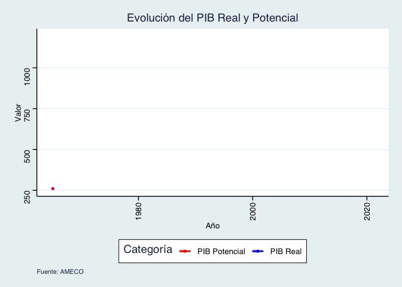
Código
p1
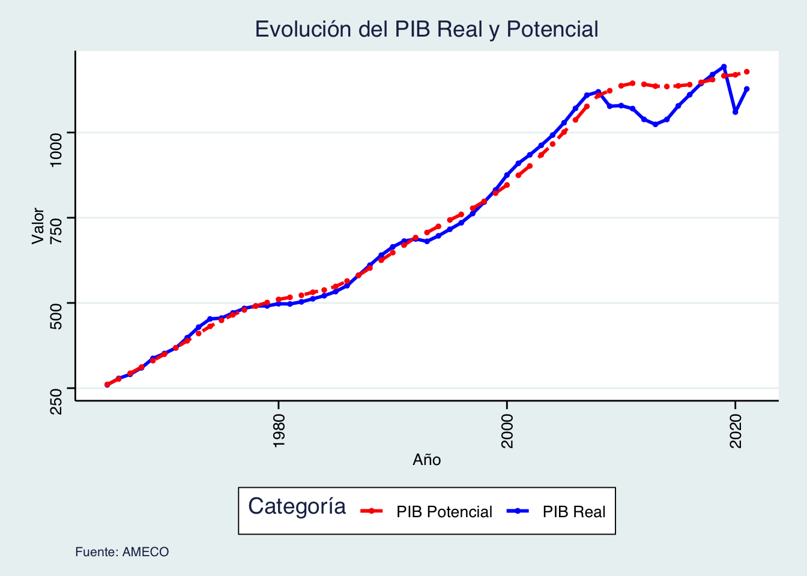
Código
# Importar y arreglar los datosruta <-"./datos/spain.xlsx"df <- rio::import(ruta) df <- df %>%slice(-1) %>%select(-c(24, 25, 26)) %>%mutate_at(vars(4:ncol(.)), as.numeric)#### PIB### Evolución del PIB y del PIB potencial df1 <- df %>%select(comunidad, periodo, PIB_real_2015, pib_potencial) %>%filter(comunidad =="total", periodo >=1965) %>%mutate(PIB_real_2015 =round(PIB_real_2015, 3),pib_potencial =round(pib_potencial, 3)) %>%mutate(periodo =as.numeric(periodo))# Gráfico de la evolución del PIB real y potencialp1 <-ggplot(df1, aes(x = periodo, group =1)) +geom_line(aes(y = PIB_real_2015, color ="PIB Real"), size =1, linetype ="solid") +geom_line(aes(y = pib_potencial, color ="PIB Potencial"), size =1, linetype ="dashed") +geom_point(aes(y = PIB_real_2015, color ="PIB Real"), size =1) +geom_point(aes(y = pib_potencial, color ="PIB Potencial"), size =1) +labs(title ="Evolución del PIB Real y Potencial",x ="Año",y ="Valor",color ="Categoría", caption ="Fuente: AMECO") +scale_color_manual(values =c("PIB Real"="blue", "PIB Potencial"="red")) +theme_stata() +theme(axis.text.x =element_text(angle =90, vjust =0.5, hjust =1)) +guides(color =guide_legend(title ="Categoría"))
1.2 Diferencial porcentual entre el PIB real y el PIB potencial
En complemento al análisis detallado de la evolución del PIB real y el PIB potencial (1.1), exploraremos el diferencial porcentual entre ambos indicadores en esta sección. Este enfoque proporcionará un apoyo visual a la comprensión de las variaciones entre el rendimiento económico real y su capacidad potencial.
Este análisis específico nos permitirá identificar periodos de sobre o subutilización de la capacidad económica, proporcionando así una perspectiva más completa sobre la eficiencia y resiliencia de la economía en diversas coyunturas.
Cuando la diferencia entre el PIB real y el PIB potencial es positiva, indica que la economía está operando por encima de su capacidad máxima de producción. Esto puede traducirse en presiones inflacionarias, ya que la demanda supera la oferta disponible. Por otro lado, una diferencia negativa sugiere que la economía está operando por debajo de su capacidad, indicando subutilización de recursos y posible desempleo.
Ejemplos de Diferencia Negativa:
Crisis de la Burbuja Inmobiliaria (2008 y posteriores): En este período, la diferencia negativa entre el PIB real y el PIB potencial en España señaló una significativa subutilización de la capacidad económica. La contracción en el sector inmobiliario y financiero llevó a una recesión, generando desempleo y disminuyendo la producción por debajo de su potencial.
Crisis del COVID-19 (2020): Durante la crisis provocada por la pandemia, la diferencia negativa entre el PIB real y el PIB potencial reflejó una brusca contracción económica. Las restricciones y la disminución de la demanda llevaron a una caída en la producción, generando una brecha significativa. Las medidas de confinamiento y la incertidumbre económica contribuyeron a la subutilización de recursos.
### Gráfico con la diferencia porcentual entre PIB real y PIB potencial df2 <- df %>%select(comunidad, periodo, diferencia_real_potencial) %>%filter(comunidad =="total", periodo >=1965) %>%mutate(diferencia_real_potencial =round(diferencia_real_potencial, 3),periodo =as.numeric(periodo)) # Crear el gráfico con etiquetas en el eje x en verticalp2 <-ggplot(df2, aes(x = periodo, y = diferencia_real_potencial, group =1)) +geom_hline(yintercept =0, linetype ="dashed", color ="red") +geom_line(color ="blue", size =1.5) +geom_ribbon(aes(ymin =-10, ymax = diferencia_real_potencial), fill ="blue", alpha =0.1) +labs(title ="Diferencia entre PIB Real y Potencial",x ="Año",y ="Diferencia Real-Potencial", caption ="Fuente: AMECO") +theme_stata() +theme(axis.text.x =element_text(angle =90, vjust =0.5, hjust =1)) +ylim(c(-10, 10)) +scale_x_continuous(breaks =seq(min(df2$periodo), max(df2$periodo), by =2))# Mostrar el gráficoprint(p2)
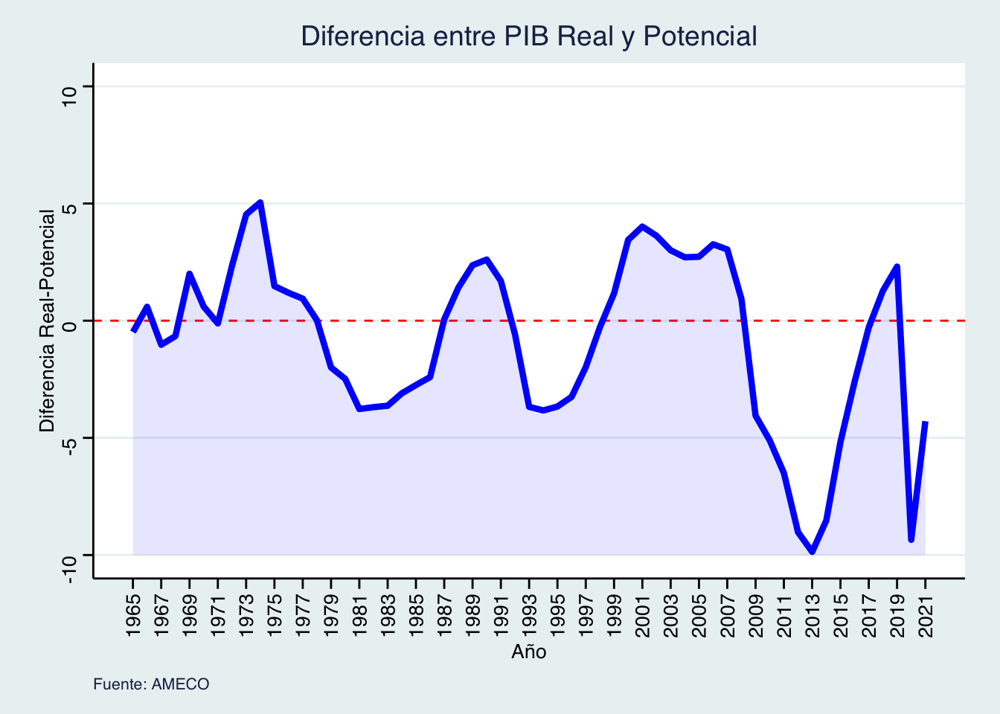
Código
### Gráfico con la diferencia porcentual entre PIB real y PIB potencial df2 <- df %>%select(comunidad, periodo, diferencia_real_potencial) %>%filter(comunidad =="total", periodo >=1965) %>%mutate(diferencia_real_potencial =round(diferencia_real_potencial, 3),periodo =as.numeric(periodo)) # Crear el gráfico con etiquetas en el eje x en verticalp2 <-ggplot(df2, aes(x = periodo, y = diferencia_real_potencial, group =1)) +geom_hline(yintercept =0, linetype ="dashed", color ="red") +geom_line(color ="blue", size =1.5) +geom_ribbon(aes(ymin =-10, ymax = diferencia_real_potencial), fill ="blue", alpha =0.1) +labs(title ="Diferencia entre PIB Real y Potencial",x ="Año",y ="Diferencia Real-Potencial", caption ="Fuente: AMECO") +theme_stata() +theme(axis.text.x =element_text(angle =90, vjust =0.5, hjust =1)) +ylim(c(-10, 10)) +scale_x_continuous(breaks =seq(min(df2$periodo), max(df2$periodo), by =2))
Pespectivas para la economía española en 2024
Según BBVA Research, el 2024 será un año de desaceleración para el crecimiento de las economías avanzadas. Además, las tensiones geopolíticas son significativas, incluyendo la expectativa de elecciones en EE. UU., en el Parlamento Europeo, entre otras. Los Bancos Centrales deberán finalizar la carrera por normalizar la inflación. La desinflación ha sido más rápida de lo anticipado. Será un año de ajuste fiscal para la eurozona con posibles efectos de contagio que podrían afectar a la economía española. Las elecciones en el Parlamento Europeo ponen de manifiesto la senda que seguirá la UE y una posible polarización que aumentaría la incertidumbre en la política económica.
España experimentó un crecimiento del 2,4% en 2023, el doble de lo previsto a finales de 2022, impulsado por políticas fiscales expansivas. La industria española tuvo un mejor desempeño que la industria europea gracias a la ventaja comparativa de no depender tanto del gas ruso. Además, aumentó la demanda interna, tanto pública como privada. También se observa un aumento en la migración: más consumo, mayor demanda y más empleo, entre otros. Se prevé que estas tendencias continúen en 2024, con un crecimiento superior al promedio europeo. Dado que España es una economía pequeña y muy abierta, estará altamente sensible a la incertidumbre y a las políticas económicas globales.
1.3 Comparación entre el PIB per cápita real y el PIB per cápita nominal
En esta sección, contrastamos el PIB per cápita real y nominal, siendo el año base para el PIB real el 2016. El PIB nominal, reflejando el valor total sin ajustes inflacionarios, tiende a estar por debajo del PIB real debido al impacto de la inflación.
Realizar el análisis en torno al PIB pc real en lugar del PIB pc nominal es esencial por varias razones fundamentales. En primer lugar, el PIB pc real ajusta los valores de producción por inflación, ofreciendo una comparación más precisa del crecimiento económico a lo largo del tiempo al eliminar el efecto de los cambios en los precios. Esto resulta crucial para evaluar el aumento real en la producción y entender el verdadero progreso económico. En segundo lugar, el PIB pc real refleja de manera más precisa el bienestar real de la población al capturar no solo el crecimiento nominal, sino también el aumento real en los ingresos y niveles de vida. Por el contrario, el PIB pc nominal puede proporcionar interpretaciones engañosas, ya que los cambios en los valores pueden deberse simplemente a la inflación, sin implicar un cambio sustancial en la capacidad adquisitiva de la población.
En el análisis del PIB per cápita real desde 1955 hasta la crisis financiera de 2008, se observa una marcada tendencia de crecimiento, indicativa de un período de desarrollo económico en España. Sin embargo, a partir de 2008, tras la crisis de la burbuja inmobiliaria, se evidencia un relativo estancamiento en el crecimiento del PIB per cápita real. Este fenómeno refleja los desafíos económicos y las fluctuaciones asociadas con eventos significativos.
### Evolución del PIB per cápita df3 <- df %>%select(comunidad, periodo, f_deflactor_pib, F_PIB_real_2016, f_población) %>%filter(comunidad =="total") %>%mutate(pib_nominal = F_PIB_real_2016 * f_deflactor_pib ) %>%mutate(F_PIB_real_2016 = F_PIB_real_2016*1000) %>%mutate(pib_nominal = pib_nominal*1000) %>%mutate(pibpc_real = F_PIB_real_2016 / f_población) %>%mutate(pibpc_nominal = pib_nominal / f_población)# Crear el gráfico interactivo con barras y líneap3 <-ggplot(df3, aes(x =as.factor(periodo), group =1)) +# Convierte periodo a factorgeom_bar(aes(y = pibpc_real, fill ="PIB per cápita real"), stat ="identity", position ="dodge", color ="black", alpha =0.7) +geom_ribbon(aes(ymin =0, ymax = pibpc_nominal), fill ="blue", alpha =0.1) +geom_line(aes(y = pibpc_nominal, color ="PIB per cápita nominal"), size =0.5) +geom_point(aes(y = pibpc_nominal), color ="blue", size =2) +labs(title ="Comparación entre PIB per cápita nominal y real",x ="Año",y ="PIB per cápita real",fill ="Categoría",color ="PIB per cápita nominal",caption ="Fuente: FEDEA") +scale_fill_manual(values =c("PIB per cápita real"="#FF9999"), guide ="none") +# Deshabilitar la leyenda para fillscale_color_manual(values =c("PIB per cápita nominal"="blue"), guide ="none") +# Deshabilitar la leyenda para colorscale_x_discrete(breaks =unique(df3$periodo[seq(1, nrow(df3), by =5)])) +# Muestra los años de 5 en 5theme_stata(base_family ="") +theme(legend.position ="bottom", axis.text.x =element_text(angle =45, hjust =1))# Convertir a gráfico interactivo con plotlyp3 <-ggplotly(p3)# Mostrar el gráfico interactivop3
Código
### Evolución del PIB per cápita df3 <- df %>%select(comunidad, periodo, f_deflactor_pib, F_PIB_real_2016, f_población) %>%filter(comunidad =="total") %>%mutate(pib_nominal = F_PIB_real_2016 * f_deflactor_pib ) %>%mutate(F_PIB_real_2016 = F_PIB_real_2016*1000) %>%mutate(pib_nominal = pib_nominal*1000) %>%mutate(pibpc_real = F_PIB_real_2016 / f_población) %>%mutate(pibpc_nominal = pib_nominal / f_población)# Crear el gráfico interactivo con barras y líneap3 <-ggplot(df3, aes(x = periodo, group =1)) +geom_bar(aes(y = pibpc_real, fill ="PIB per cápita real"), stat ="identity", position ="dodge", color ="black", alpha =0.7) +geom_ribbon(aes(ymin =0, ymax = pibpc_nominal), fill ="blue", alpha =0.1) +geom_line(aes(y = pibpc_nominal, color ="PIB per cápita nominal"), size =0.5) +geom_point(aes(y = pibpc_nominal), color ="blue", size =2) +labs(title ="Comparación entre PIB per cápita nominal y real",x ="Año",y ="PIB per cápita real",fill ="Categoría",color ="PIB per cápita nominal",caption ="Fuente: FEDEA") +scale_fill_manual(values =c("PIB per cápita real"="#FF9999")) +scale_color_manual(values =c("PIB per cápita nominal"="blue")) +theme_stata(base_family ="") +theme(legend.position ="bottom", axis.text.x =element_text(angle =90, hjust =0.5))
1.4 Tabla con el PIB pc real para las Comunidades Autónomas desde 1955
En esta sección, presentaremos una tabla detallada que desglose el PIB per cápita real para las Comunidades Autónomas de España desde 1955 hasta la fecha actual. Esta tabla proporcionará una visión exhaustiva de la distribución del crecimiento económico a nivel regional, destacando posibles disparidades y patrones de desarrollo. Al presentar los datos de manera estructurada, facilitaremos la identificación de tendencias y la comprensión de la contribución relativa de cada región al panorama económico general del país.
### Tabla de scroll con pib pc real para las comunidadesnuevos_nombres <-c("Andalucía", "Aragón", "Asturias", "Islas Baleares", "Islas Canarias", "Cantabria", "Castilla y León", "Castilla - La Mancha", "Cataluña", "Comunidad Valenciana", "Extremadura", "Galicia", "Comunidad de Madrid", "Murcia", "Navarra", "País Vasco", "La Rioja", "Ceuta y Melilla", "Total")## Tabla que más me gusta df4 <- df %>%select(comunidad, periodo, F_PIB_real_2016, f_población) %>%mutate(F_PIB_real_2016 = F_PIB_real_2016 *1000) %>%mutate(pibpc_real = F_PIB_real_2016 / f_población) %>%select(-c(3, 4)) %>%pivot_wider(names_from = periodo, values_from = pibpc_real) %>%mutate(comunidad = nuevos_nombres)df4 <- df4 %>%mutate(across(where(is.numeric), \(x) round(x, digits =2)))
2. Análisis del Desempleo
En esta sección, nos adentraremos en el análisis del desempleo, examinando la evolución de la Tasa de Desempleo y la Tasa de Desempleo Estructural (NAIRU). Posteriormente, de la evolución de la población activa (parados y ocupados). Por último, la evolución de la tasa de desempleo por Comunidades Autónomas.
2.1 Evolución de la Tasa de Desempleo y la Tasa de Desempleo Estructural (NAIRU)
El enfoque principal será comprender la dinámica del empleo en España a lo largo del tiempo. Exploraremos la variación en la Tasa de Desempleo, destacando momentos críticos que han impactado el mercado laboral. Además, examinaremos la Tasa de Desempleo Estructural (NAIRU), que representa la tasa de desempleo natural en una economía sin presiones inflacionarias. Este análisis nos permitirá evaluar no solo las fluctuaciones a corto plazo, sino también comprender las condiciones subyacentes del mercado laboral a lo largo de las décadas.
#### Desempleo### Tasa de desempleo vs NAIRUdfn <- df %>%select(comunidad, periodo, nairu, b_tasa_paro) %>%filter(comunidad =="total", periodo >=1977) %>%mutate(nairu =round(nairu, 3),b_tasa_paro =round(b_tasa_paro, 3)) %>%mutate(periodo =as.numeric(periodo))# Gráfico de la evolución del NAIRU y paradospn <-ggplot(dfn, aes(x = periodo, group =1)) +geom_line(aes(y = nairu, color ="NAIRU"), size =1, linetype ="solid") +geom_line(aes(y = b_tasa_paro, color ="Tasa de Paro"), size =1, linetype ="dashed") +geom_point(aes(y = nairu, color ="NAIRU"), size =1) +geom_point(aes(y = b_tasa_paro, color ="Tasa de Paro"), size =1) +labs(title ="Evolución de la Tasa de Desempleo y NAIRU",x ="Año",y ="Valor",color ="Categoría", caption ="Fuente: AMECO") +scale_color_manual(values =c("NAIRU"="blue", "Tasa de Paro"="red")) +theme_stata() +theme(axis.text.x =element_text(angle =90, vjust =0.5, hjust =1)) +guides(color =guide_legend(title ="Categoría"))# Crea la animaciónp_animated2 <- pn +transition_reveal(periodo) +enter_fade() +exit_fade()# Visualiza la animaciónanimate(p_animated2, nframes =200, fps =20, end_pause =0)
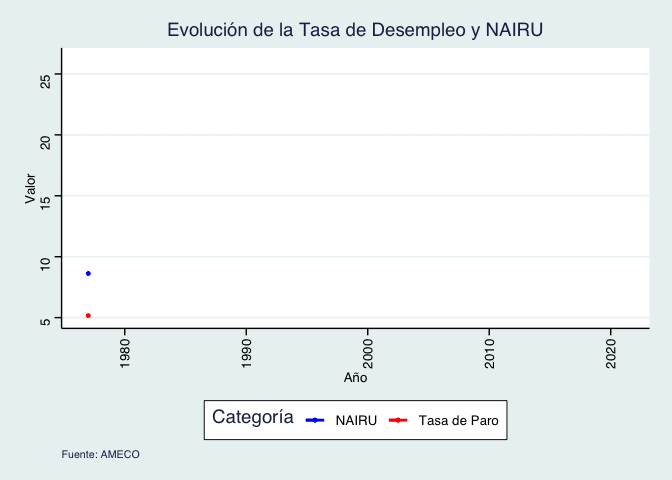
Código
pn
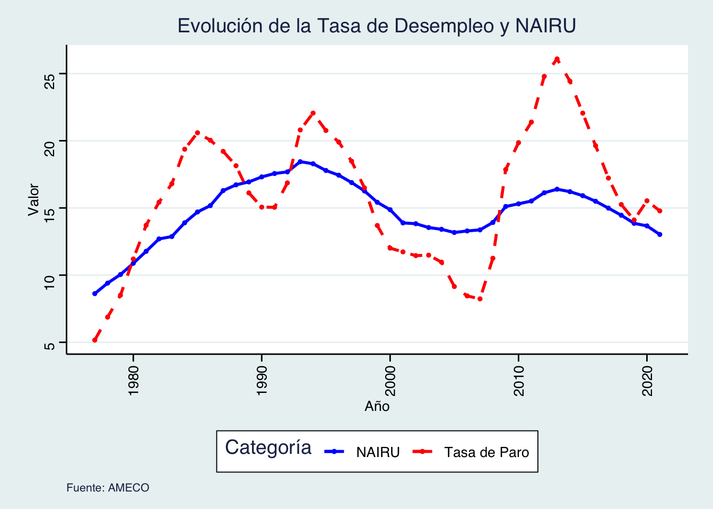
Código
#### Desempleo### Tasa de desempleo vs NAIRUdfn <- df %>%select(comunidad, periodo, nairu, b_tasa_paro) %>%filter(comunidad =="total", periodo >=1977) %>%mutate(nairu =round(nairu, 3),b_tasa_paro =round(b_tasa_paro, 3)) %>%mutate(periodo =as.numeric(periodo))# Gráfico de la evolución del NAIRU y paradospn <-ggplot(dfn, aes(x = periodo, group =1)) +geom_line(aes(y = nairu, color ="NAIRU"), size =1, linetype ="solid") +geom_line(aes(y = b_tasa_paro, color ="Tasa de Paro"), size =1, linetype ="dashed") +geom_point(aes(y = nairu, color ="NAIRU"), size =1) +geom_point(aes(y = b_tasa_paro, color ="Tasa de Paro"), size =1) +labs(title ="Evolución de la Tasa de Desempleo y NAIRU",x ="Año",y ="Valor",color ="Categoría", caption ="Fuente: AMECO") +scale_color_manual(values =c("NAIRU"="blue", "Tasa de Paro"="red")) +theme_stata() +theme(axis.text.x =element_text(angle =90, vjust =0.5, hjust =1)) +guides(color =guide_legend(title ="Categoría"))
2.2 Diferencial porcentual entre la Tasa de Desempleo y la Tasa de Desempleo Estructural (NAIRU)
En esta sección, nos enfocaremos en el Diferencial porcentual entre la Tasa de Desempleo y la Tasa de Desempleo Estructural (NAIRU). Este análisis proporcionará una perspectiva detallada sobre las brechas entre la tasa de desempleo actual y la tasa de desempleo considerada natural en condiciones de equilibrio. Podemos destacar:
Durante las décadas de los 80 y 90 en España, se observó que las tasas de desempleo estuvieron consistentemente por encima de la Tasa de Desempleo Estructural (NAIRU). Este fenómeno puede atribuirse a varios factores, entre ellos, la transición económica y la modernización industrial que caracterizaron esos períodos. Las reformas estructurales, aunque necesarias para la adaptación a la economía global, generaron desajustes temporales en el mercado laboral. Los cambios en la estructura productiva y la adopción de nuevas tecnologías llevaron a una destrucción de empleo en ciertos sectores, contribuyendo a tasas de desempleo elevadas.
Tras la crisis financiera de 2008, se evidenció un aumento significativo en la tasa de desempleo por encima de la NAIRU. La recesión económica y la contracción en diversos sectores, particularmente en la construcción, provocaron una rápida pérdida de empleo. La recuperación posterior fue gradual, pero la tasa de desempleo permaneció elevada durante un tiempo, reflejando las secuelas de la crisis.
En contraste, durante la crisis del COVID-19, las medidas gubernamentales, especialmente los Expedientes de Regulación Temporal de Empleo (ERTEs), jugaron un papel crucial. Estos programas de apoyo mitigaron la destrucción masiva de empleo al proporcionar un mecanismo de suspensión temporal de los contratos laborales. Esto evitó que la tasa de desempleo se disparara por encima de la NAIRU, ofreciendo estabilidad al mercado laboral y resaltando la eficacia de las políticas de respuesta ante crisis económicas.
### Gráfico con la diferencia porcentual entre PIB real y PIB potencial dfd <- df %>%select(comunidad, periodo, nairu, b_tasa_paro) %>%filter(comunidad =="total", periodo >=1977) %>%mutate(nairu =round(nairu, 3),b_tasa_paro =round(b_tasa_paro, 3)) %>%mutate(periodo =as.numeric(periodo)) %>%mutate(diferencia_desempleo = b_tasa_paro - nairu)pd <-ggplot(dfd, aes(x = periodo, y = diferencia_desempleo, group =1)) +geom_hline(yintercept =0, linetype ="dashed", color ="red") +geom_line(color ="blue",size =1.5) +geom_ribbon(aes(ymin =-10, ymax = diferencia_desempleo), fill ="blue", alpha =0.1) +labs(title ="Diferencia entre Tasa de desempleo y NAIRU",x ="Año",y ="Diferencia entre Tasa de desempleo y NAIRU", caption ="Fuente: AMECO") +theme_stata() +theme(axis.text.x =element_text(angle =90, vjust =0.5, hjust =1)) +ylim(c(-10, 10))# Mostrar el gráficoprint(pd)
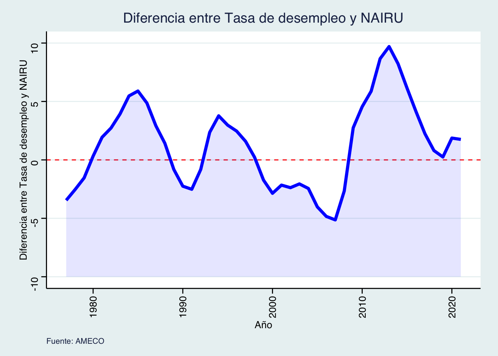
Código
### Gráfico con la diferencia porcentual entre PIB real y PIB potencial dfd <- df %>%select(comunidad, periodo, nairu, b_tasa_paro) %>%filter(comunidad =="total", periodo >=1977) %>%mutate(nairu =round(nairu, 3),b_tasa_paro =round(b_tasa_paro, 3)) %>%mutate(periodo =as.numeric(periodo)) %>%mutate(diferencia_desempleo = b_tasa_paro - nairu)pd <-ggplot(dfd, aes(x = periodo, y = diferencia_desempleo, group =1)) +geom_hline(yintercept =0, linetype ="dashed", color ="red") +geom_line(color ="blue",size =1.5) +geom_ribbon(aes(ymin =-10, ymax = diferencia_desempleo), fill ="blue", alpha =0.1) +labs(title ="Diferencia entre Tasa de desempleo y NAIRU",x ="Año",y ="Diferencia entre Tasa de desempleo y NAIRU", caption ="Fuente: AMECO") +theme_stata() +theme(axis.text.x =element_text(angle =90, vjust =0.5, hjust =1)) +ylim(c(-10, 10))
2.3 Evolución de la Población Activa: Parados y Ocupados
El análisis de la Población Activa proporcionará una visión completa de la participación laboral, permitiendo entender mejor las tendencias y desafíos en la oferta y la demanda de empleo en distintos períodos económicos.
La ecuación de la Población Activa (PA) se desglosa en dos componentes: los Ocupados (O) y los Parados (P). A partir de esta ecuación, se derivan varios indicadores económicos clave:
Tasa de Actividad (TA): La Tasa de Actividad mide la proporción de la población en edad de trabajar que está activamente participando en el mercado laboral, ya sea empleada o buscando empleo. Se calcula como (PA / Población en Edad de Trabajar (PET)) * 100.
Tasa de Ocupación (TO): La Tasa de Ocupación indica la proporción de la población en edad de trabajar que está actualmente empleada. Se determina como (O / PET) * 100.
Tasa de Paro (TP): La Tasa de Paro mide el porcentaje de la población activa que está desempleada, es decir, busca empleo pero no lo encuentra. Se expresa como (P / PA) * 100.
Estos indicadores proporcionan una comprensión detallada de la dinámica del mercado laboral. La Tasa de Actividad refleja la participación general en el mercado laboral, la Tasa de Ocupación destaca la proporción de personas empleadas, y la Tasa de Paro señala la prevalencia del desempleo. Estos indicadores son fundamentales para evaluar el rendimiento económico y la salud del mercado laboral en diferentes contextos y períodos.
### Como han evolucionado los parados y ocupados a lo largo del tiempo df5 <- df %>%select(comunidad, periodo, f_parados, f_ocupados) %>%filter(comunidad =="total", periodo >=1965) %>%mutate(f_parados =round(f_parados, 3),f_ocupados =round(f_ocupados, 3)) %>%mutate(periodo =as.numeric(periodo))# Crear el gráfico con ggplot2gg_barras_apiladas <-ggplot(df5, aes(x = periodo, fill =factor(comunidad))) +geom_bar(aes(y = f_ocupados, color ="Ocupados"), stat ="identity", position ="stack", alpha =0.7) +geom_bar(aes(y = f_parados, color ="Parados"), stat ="identity", position ="stack", alpha =0.7) +labs(title ="Comparación de Ocupados y Parados en España",x ="Periodo",y ="Número de Personas",color ="Categoría", caption ="Fuente: FEDEA") +scale_fill_manual(values =c("Ocupados"="blue", "Parados"="red")) +theme_stata()# Imprimir el gráficoprint(gg_barras_apiladas)
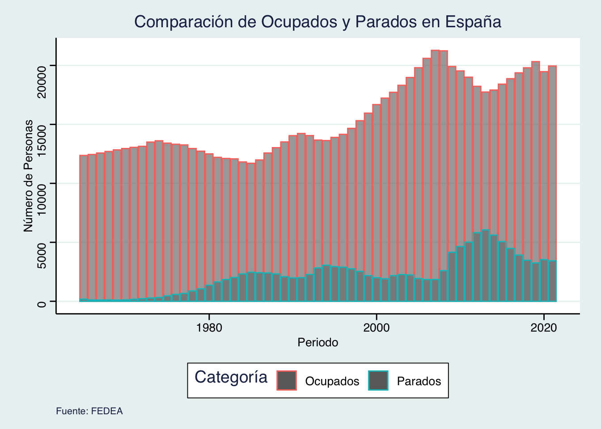
Código
### Como han evolucionado los parados y ocupados a lo largo del tiempo df5 <- df %>%select(comunidad, periodo, f_parados, f_ocupados) %>%filter(comunidad =="total", periodo >=1965) %>%mutate(f_parados =round(f_parados, 3),f_ocupados =round(f_ocupados, 3)) %>%mutate(periodo =as.numeric(periodo))# Crear el gráfico con ggplot2gg_barras_apiladas <-ggplot(df5, aes(x = periodo, fill =factor(comunidad))) +geom_bar(aes(y = f_ocupados, color ="Ocupados"), stat ="identity", position ="stack", alpha =0.7) +geom_bar(aes(y = f_parados, color ="Parados"), stat ="identity", position ="stack", alpha =0.7) +labs(title ="Comparación de Ocupados y Parados en España",x ="Periodo",y ="Número de Personas",color ="Categoría", caption ="Fuente: FEDEA") +scale_fill_manual(values =c("Ocupados"="blue", "Parados"="red")) +theme_stata()
2.4 Evolución a lo largo del tiempo: Tasa de Desempleo por Comunidad Autónoma
En esta sección, se presentarán cuatro gráficos que ilustran la evolución temporal de la Tasa de Desempleo por Comunidad Autónoma en momentos clave: 1977, 1995, 2007 y 2021. Cada gráfico proporcionará una representación visual de cómo ha variado el desempleo en las diferentes regiones en estos años específicos. Más adelante en la presentación se utilizarán mapas para ofrecer una representación aún más gráfica y detallada de la evolución de la Tasa de Desempleo por Comunidad Autónoma.
### Tasa de desempleo df6 <- df %>%select(comunidad, periodo, b_tasa_paro) %>%filter(periodo >=1977) %>%mutate(b_tasa_paro =round(b_tasa_paro, 2)) %>%mutate(periodo =as.numeric(periodo)) # Filtrar para el año 1977df6_1977 <- df6 %>%filter(periodo ==1977) %>%mutate(comunidad = nuevos_nombres) %>%filter(comunidad !="Ceuta y Melilla")# Ordenar df6_1977 de mayor a menor según la columna b_tasa_parodf6_1977 <- df6_1977 %>%arrange(desc(b_tasa_paro))# Filtrar para el año 1995df6_1995 <- df6 %>%filter(periodo ==1995) %>%mutate(comunidad = nuevos_nombres) %>%filter(comunidad !="Ceuta y Melilla")# Ordenar df6_1995 de mayor a menor según la columna b_tasa_parodf6_1995 <- df6_1995 %>%arrange(desc(b_tasa_paro))# Filtrar para el año 2007df6_2007 <- df6 %>%filter(periodo ==2007) %>%mutate(comunidad = nuevos_nombres) %>%filter(comunidad !="Ceuta y Melilla")# Ordenar df6_1977 de mayor a menor según la columna b_tasa_parodf6_2007 <- df6_2007 %>%arrange(desc(b_tasa_paro))# Filtrar para el año 2021df6_2021 <- df6 %>%filter(periodo ==2021) %>%mutate(comunidad = nuevos_nombres) %>%filter(comunidad !="Ceuta y Melilla")# Ordenar df6_2021 de mayor a menor según la columna b_tasa_parodf6_1977 <- df6_2021 %>%arrange(desc(b_tasa_paro))# Función para crear un gráfico de barras para la tasa de parocrear_grafico <-function(data, title) {ggplot(data, aes(x =reorder(comunidad, b_tasa_paro), y = b_tasa_paro, fill = comunidad)) +geom_bar(stat ="identity") +labs(title = title, x ="Comunidad Autónoma", y ="Tasa de Paro") +theme_stata() +theme(axis.text.x =element_text(angle =45, hjust =1))}# Crear gráficos individualesgrafico_1977 <-crear_grafico(df6_1977, "Tasa de Paro en 1977")grafico_1995 <-crear_grafico(df6_1995, "Tasa de Paro en 1995")grafico_2007 <-crear_grafico(df6_2007, "Tasa de Paro en 2007")grafico_2021 <-crear_grafico(df6_2021, "Tasa de Paro en 2021")# Organizar los gráficos en una cuadrículagrafico_combinado <- grafico_1977 +theme(legend.position ="none")+plot_annotation(title ="Tasa de Paro en España por Comunidad Autónoma 1977",caption ="Fuente: BdeMores") # Mostrar el gráfico combinadoprint(grafico_combinado)
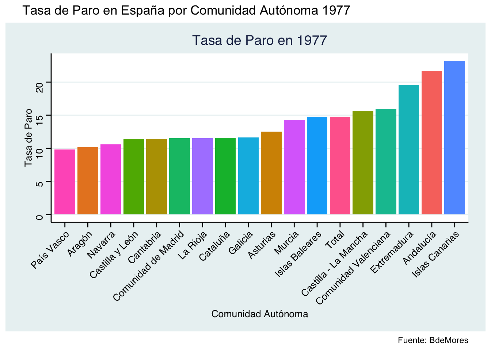
Código
grafico_combinado2 <- grafico_1995 +theme(legend.position ="none")+plot_annotation(title ="Tasa de Paro en España por Comunidad Autónoma 1995",caption ="Fuente: BdeMores") # Mostrar el gráfico combinadoprint(grafico_combinado2)
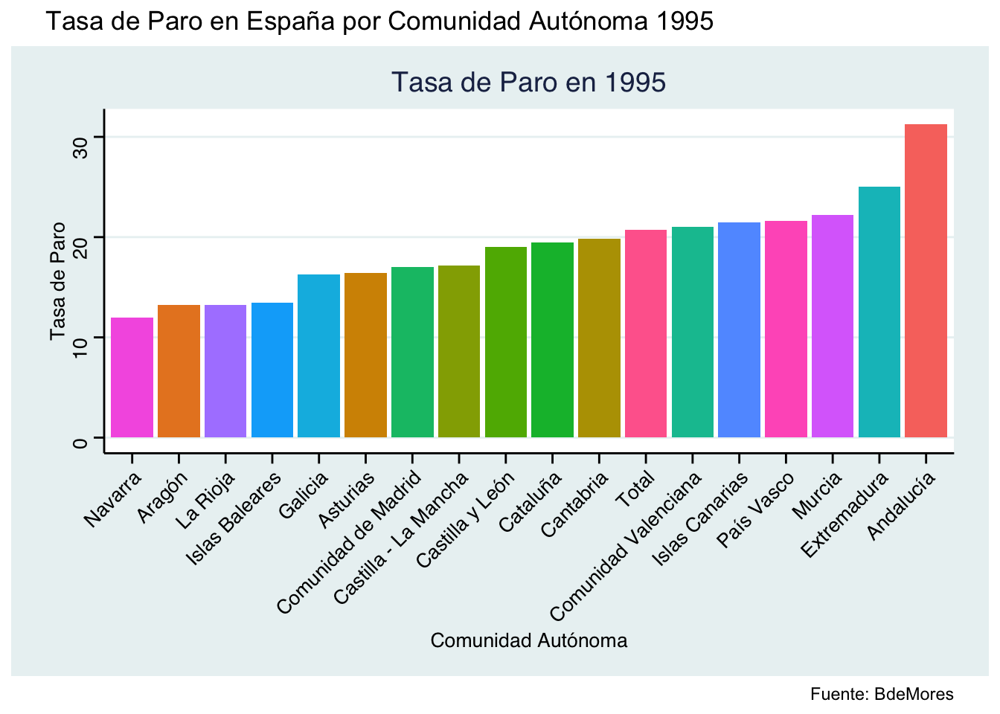
Código
# Organizar los gráficos en una cuadrículagrafico_combinado3 <- grafico_2007 +theme(legend.position ="none")+plot_annotation(title ="Tasa de Paro en España por Comunidad Autónoma 2007",caption ="Fuente: BdeMores") # Mostrar el gráfico combinadoprint(grafico_combinado3)
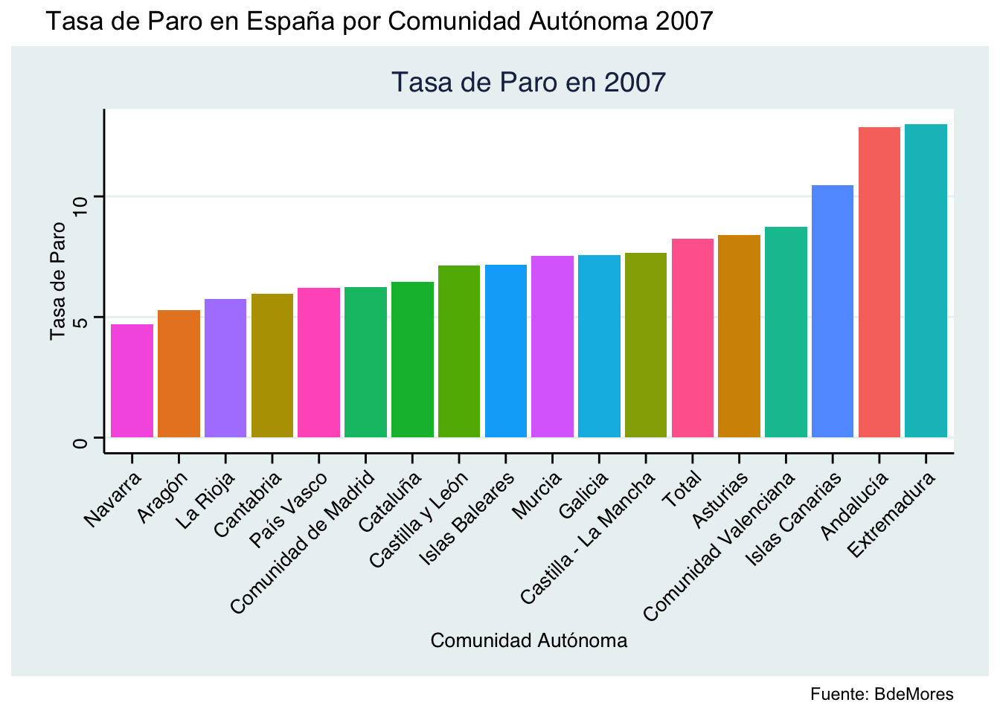
Código
# Organizar los gráficos en una cuadrículagrafico_combinado4 <- grafico_2021 +theme(legend.position ="none")+plot_annotation(title ="Tasa de Paro en España por Comunidad Autónoma 2021",caption ="Fuente: BdeMores") # Mostrar el gráfico combinadoprint(grafico_combinado4)
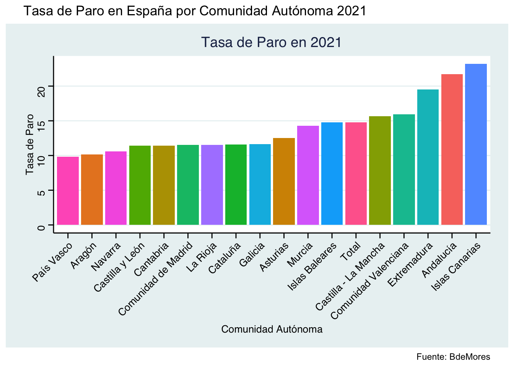
Código
### Tasa de desempleo df6 <- df %>%select(comunidad, periodo, b_tasa_paro) %>%filter(periodo >=1977) %>%mutate(b_tasa_paro =round(b_tasa_paro, 2)) %>%mutate(periodo =as.numeric(periodo)) # Filtrar para el año 1977df6_1977 <- df6 %>%filter(periodo ==1977) %>%mutate(comunidad = nuevos_nombres) %>%filter(comunidad !="Ceuta y Melilla")# Ordenar df6_1977 de mayor a menor según la columna b_tasa_parodf6_1977 <- df6_1977 %>%arrange(desc(b_tasa_paro))# Filtrar para el año 1995df6_1995 <- df6 %>%filter(periodo ==1995) %>%mutate(comunidad = nuevos_nombres) %>%filter(comunidad !="Ceuta y Melilla")# Ordenar df6_1995 de mayor a menor según la columna b_tasa_parodf6_1995 <- df6_1995 %>%arrange(desc(b_tasa_paro))# Filtrar para el año 2007df6_2007 <- df6 %>%filter(periodo ==2007) %>%mutate(comunidad = nuevos_nombres) %>%filter(comunidad !="Ceuta y Melilla")# Ordenar df6_1977 de mayor a menor según la columna b_tasa_parodf6_2007 <- df6_2007 %>%arrange(desc(b_tasa_paro))# Filtrar para el año 2021df6_2021 <- df6 %>%filter(periodo ==2021) %>%mutate(comunidad = nuevos_nombres) %>%filter(comunidad !="Ceuta y Melilla")# Ordenar df6_2021 de mayor a menor según la columna b_tasa_parodf6_1977 <- df6_2021 %>%arrange(desc(b_tasa_paro))# Función para crear un gráfico de barras para la tasa de parocrear_grafico <-function(data, title) {ggplot(data, aes(x =reorder(comunidad, b_tasa_paro), y = b_tasa_paro, fill = comunidad)) +geom_bar(stat ="identity") +labs(title = title, x ="Comunidad Autónoma", y ="Tasa de Paro") +theme_stata() +theme(axis.text.x =element_text(angle =45, hjust =1))}# Crear gráficos individualesgrafico_1977 <-crear_grafico(df6_1977, "Tasa de Paro en 1977")grafico_1995 <-crear_grafico(df6_1995, "Tasa de Paro en 1995")grafico_2007 <-crear_grafico(df6_2007, "Tasa de Paro en 2007")grafico_2021 <-crear_grafico(df6_2021, "Tasa de Paro en 2021")
3. Comparación entre el PIB y el Desempleo
En esta sección, realizaremos una comparación integral entre el Producto Interno Bruto (PIB) y la Tasa de Desempleo por Comunidades Autónomas.
3.1 Mapa por Comunidades Autónomas: Evolución de la Tasa de Desempleo
En esta sección, exploraremos la evolución de la Tasa de Desempleo en España a través de cuatro mapas interactivos que representan los años 1955, 1975, 2000 y 2021 respectivamente. Estos mapas proporcionarán una visión visual de cómo ha variado la tasa de desempleo en cada Comunidad Autónoma a lo largo de décadas clave en la historia económica española.
Al analizar estos mapas, se observan diferencias notables en las tasas de desempleo entre el sur y el norte de España. Estas disparidades pueden atribuirse a diversas razones, como las disparidades históricas en el desarrollo industrial, la concentración de sectores económicos específicos en ciertas regiones y las variaciones en las inversiones y políticas de desarrollo regional.
Con el paso del tiempo, esta tendencia ha mostrado un creciente aumento de la disparidad entre el sur y el norte, acentuándose aún más en los años recientes. Factores como la descentralización industrial, las inversiones en infraestructura y la dinámica de la globalización han influido en estas diferencias regionales en las tasas de desempleo. Este análisis visual nos permitirá identificar patrones geográficos y comprender cómo factores económicos y estructurales han impactado la distribución del empleo en España a lo largo del tiempo.
#### Mapa coroplético desempleo y PIB nuevos_nombres2 <-c("Andalucía", "Aragón", "Asturias", "Baleares", "Canarias", "Cantabria", "Castilla y León", "Castilla-La Mancha", "Cataluña", "Comunidad Valenciana", "Extremadura", "Galicia", "Madrid", "Murcia", "Navarra", "País Vasco", "La Rioja", "Ceuta", "Melilla")dfc <- df %>%distinct(comunidad) %>%mutate(nuevos_nombres = nuevos_nombres2)dfc <-left_join(df, dfc, by ="comunidad")dfc <- dfc %>%select(nuevos_nombres, periodo, F_PIB_real_2016, f_parados, f_ocupados, f_población) %>%mutate(tasa_desempleo = f_parados/(f_parados + f_ocupados)*100) %>%mutate(pibpc= F_PIB_real_2016/f_población) %>%select(nuevos_nombres, periodo, pibpc, tasa_desempleo) %>%rename(comunidad = nuevos_nombres)#Obtenemos el mapa de España por CCAAdf_ccaa <-esp_get_ccaa()%>%select(ccaa.shortname.es, geometry) %>%rename("comunidad"= ccaa.shortname.es)df_datos_mapa <- dfc %>%filter(periodo %in%c(1955, 1975, 2000, 2021)) %>%filter(`comunidad`!="total")df_mapa <-left_join(df_ccaa, df_datos_mapa, by =c("comunidad"="comunidad"))### Mapa para el paro df_mapa_ccaa1 <- df_mapa %>%group_by(periodo) %>%mutate(paro_ccaa_4 =ntile(tasa_desempleo, 4)) %>%ungroup() %>%mutate(paro_ccaa_4 = forcats::as_factor(paro_ccaa_4))pc <-ggplot(df_mapa_ccaa1) +geom_sf(aes(geometry = geometry, fill = paro_ccaa_4)) +scale_fill_brewer(palette ="Blues", name =NULL,labels =c("1er cuartil", "2do cuartil", "3er cuartil", "4to cuartil"))+facet_wrap(vars(periodo)) +theme(axis.text.x =element_blank(),axis.text.y =element_blank(), plot.caption =element_text(hjust =0.5)) +labs(title ="Tasa de desempleo por cuartiles" , caption ="Fuente: FEDEA") +theme_stata() +scale_y_continuous(breaks =NULL) +scale_x_continuous(breaks =NULL)pc
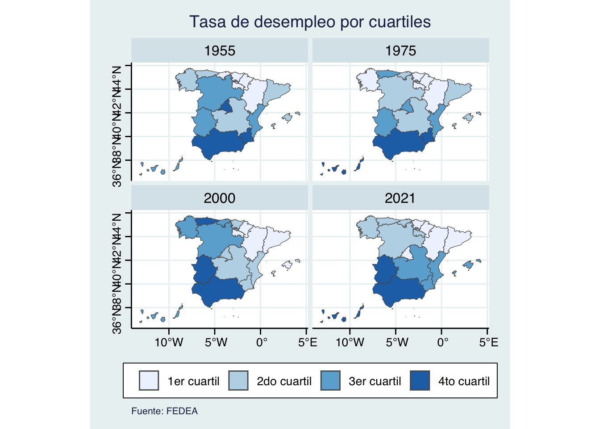
Código
#### Mapa coroplético desempleo y PIB nuevos_nombres2 <-c("Andalucía", "Aragón", "Asturias", "Baleares", "Canarias", "Cantabria", "Castilla y León", "Castilla-La Mancha", "Cataluña", "Comunidad Valenciana", "Extremadura", "Galicia", "Madrid", "Murcia", "Navarra", "País Vasco", "La Rioja", "Ceuta", "Melilla")dfc <- df %>%distinct(comunidad) %>%mutate(nuevos_nombres = nuevos_nombres2)dfc <-left_join(df, dfc, by ="comunidad")dfc <- dfc %>%select(nuevos_nombres, periodo, F_PIB_real_2016, f_parados, f_ocupados, f_población) %>%mutate(tasa_desempleo = f_parados/(f_parados + f_ocupados)*100) %>%mutate(pibpc= F_PIB_real_2016/f_población) %>%select(nuevos_nombres, periodo, pibpc, tasa_desempleo) %>%rename(comunidad = nuevos_nombres)#Obtenemos el mapa de España por CCAAdf_ccaa <-esp_get_ccaa()%>%select(ccaa.shortname.es, geometry) %>%rename("comunidad"= ccaa.shortname.es)df_datos_mapa <- dfc %>%filter(periodo %in%c(1955, 1975, 2000, 2021)) %>%filter(`comunidad`!="total")df_mapa <-left_join(df_ccaa, df_datos_mapa, by =c("comunidad"="comunidad"))### Mapa para el paro df_mapa_ccaa1 <- df_mapa %>%group_by(periodo) %>%mutate(paro_ccaa_4 =ntile(tasa_desempleo, 4)) %>%ungroup() %>%mutate(paro_ccaa_4 = forcats::as_factor(paro_ccaa_4))pc <-ggplot(df_mapa_ccaa1) +geom_sf(aes(geometry = geometry, fill = paro_ccaa_4)) +scale_fill_brewer(palette ="Blues", name =NULL,labels =c("1er cuartil", "2do cuartil", "3er cuartil", "4to cuartil"))+facet_wrap(vars(periodo)) +theme(axis.text.x =element_blank(),axis.text.y =element_blank(), plot.caption =element_text(hjust =0.5)) +labs(title ="Tasa de desempleo por cuartiles" , caption ="Fuente: FEDEA") +theme_stata() +scale_y_continuous(breaks =NULL) +scale_x_continuous(breaks =NULL)
3.2 Mapa por Comunidades Autónomas: Evolución de la PIB per cápita
En este análisis, exploraremos la evolución de la renta per cápita en España mediante cuatro mapas interactivos correspondientes a los años 1955, 1975, 2000 y 2021. Estos mapas nos brindarán una representación visual dinámica de cómo ha variado el Producto Interno Bruto (PIB) per cápita en cada Comunidad Autónoma a lo largo de décadas clave.
Contrastando con el análisis de la Tasa de Desempleo, se observa una tendencia consistente a lo largo del tiempo: las Comunidades Autónomas del norte de España, con tasas de desempleo históricamente más bajas, exhiben mayores niveles de PIB per cápita. Por otro lado, las Comunidades Autónomas del sur, con tasas de desempleo históricamente más altas, presentan niveles más bajos de PIB per cápita.
Estas correlaciones reflejan la interconexión entre el empleo y la producción económica a nivel regional. Factores históricos, inversiones en infraestructura, desarrollo industrial y políticas económicas pueden explicar estas disparidades. Al analizar conjuntamente los mapas de desempleo y PIB per cápita, se obtiene una comprensión más completa de cómo los aspectos económicos y laborales han influido en el desarrollo regional de España a lo largo de los años.
### Mapa para el PIBdf_mapa_ccaa2 <- df_mapa %>%group_by(periodo) %>%mutate(pibpc =ntile(pibpc, 4)) %>%ungroup() %>%mutate(pibpc = forcats::as_factor(pibpc))pc2 <-ggplot(df_mapa_ccaa2) +geom_sf(aes(geometry = geometry, fill = pibpc)) +scale_fill_brewer(palette ="Blues", name =NULL,labels =c("1er cuartil", "2do cuartil", "3er cuartil", "4to cuartil"))+facet_wrap(vars(periodo)) +theme(axis.text.x =element_blank(),axis.text.y =element_blank(), plot.caption =element_text(hjust =0.5)) +labs(title ="PIBpc real por cuartiles" , caption ="Fuente: FEDEA") +theme_stata() +scale_y_continuous(breaks =NULL) +scale_x_continuous(breaks =NULL)pc2
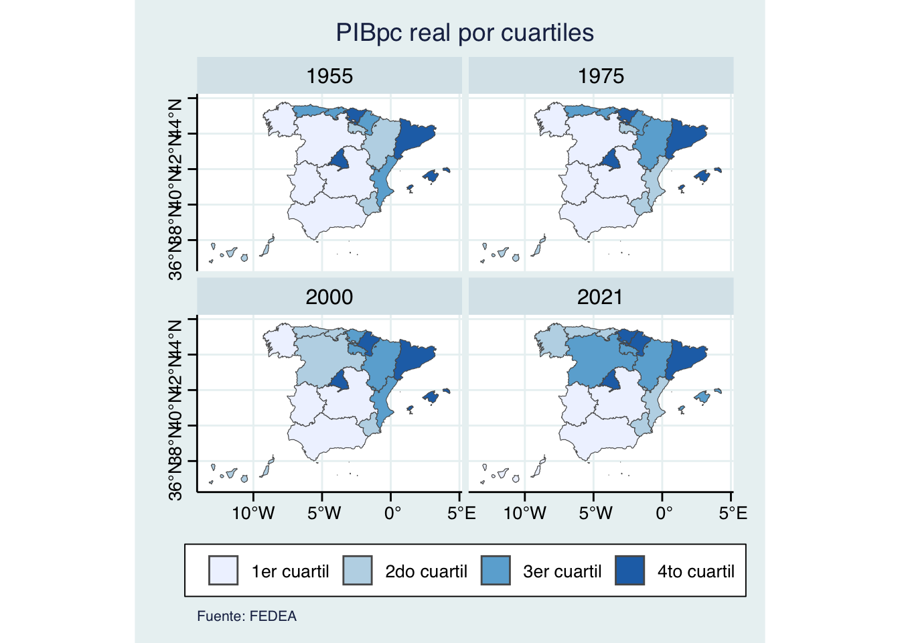
Código
### Mapa para el PIBdf_mapa_ccaa2 <- df_mapa %>%group_by(periodo) %>%mutate(pibpc =ntile(pibpc, 4)) %>%ungroup() %>%mutate(pibpc = forcats::as_factor(pibpc))pc2 <-ggplot(df_mapa_ccaa2) +geom_sf(aes(geometry = geometry, fill = pibpc)) +scale_fill_brewer(palette ="Blues", name =NULL,labels =c("1er cuartil", "2do cuartil", "3er cuartil", "4to cuartil"))+facet_wrap(vars(periodo)) +theme(axis.text.x =element_blank(),axis.text.y =element_blank(), plot.caption =element_text(hjust =0.5)) +labs(title ="PIBpc real por cuartiles" , caption ="Fuente: FEDEA") +theme_stata() +scale_y_continuous(breaks =NULL) +scale_x_continuous(breaks =NULL)
4. Inflación por Comunidades Autónomas
4.1 Tabla con la inflación interanual por Comunidades Autónomas desde 1956
En esta sección, presentaremos una tabla detallada que muestra la Inflación Interanual por Comunidades Autónomas desde el año 1956. La medida de inflación utilizada es el Deflactor del PIB, calculado a través de la tasa de crecimiento del deflactor. Esta herramienta nos permite evaluar cómo los precios han variado en cada región a lo largo del tiempo, proporcionando una visión integral de la dinámica inflacionaria a nivel autonómico.
El Deflactor del PIB es una métrica relevante que ajusta el PIB nominal al valor real, teniendo en cuenta las variaciones en los precios. Al calcular la tasa de inflación interanual, se capturan los cambios porcentuales en el nivel general de precios en cada Comunidad Autónoma. Este análisis permitirá identificar patrones inflacionarios, evaluar la estabilidad económica y entender las variaciones regionales en los costos de bienes y servicios a lo largo del tiempo.
Las Curvas de Phillips son representaciones gráficas que exploran la relación inversa entre la tasa de inflación y la tasa de desempleo en una economía. Esta relación es fundamental en la teoría macroeconómica y proporciona insights valiosos sobre las dinámicas del mercado laboral y los efectos de las políticas económicas.
En términos generales, la Curva de Phillips sugiere que existe una relación de trade-off entre inflación y desempleo en el corto plazo. Esto significa que cuando la tasa de desempleo es baja, la inflación tiende a ser alta, y viceversa. Esta relación implica que las autoridades económicas pueden elegir entre tener una tasa de desempleo más baja a expensas de una inflación más alta, o viceversa.
Sin embargo, es importante destacar que esta relación puede ser afectada por diversos factores a largo plazo, como las expectativas inflacionarias y las condiciones estructurales del mercado laboral. A lo largo del tiempo, las Curvas de Phillips pueden cambiar de forma debido a cambios en la estructura económica, las políticas gubernamentales y las expectativas de los agentes económicos.
A continuación, exploraremos Curvas de Phillips específicas para la economía española y un par de sus provincias en diferentes momentos del tiempo. Analizar estas curvas nos permitirá comprender cómo ha evolucionado la relación entre inflación y desempleo, proporcionando información valiosa sobre la dinámica económica a lo largo de los años.
5.1 Curva de Phillips para la economía española en diferentes momentos del tiempo
En el análisis de las Curvas de Phillips para la economía española en distintos periodos, se observan tendencias y cambios significativos en la relación entre la tasa de inflación y la tasa de desempleo.
Curva de Phillips 1978-2000: Durante este periodo, la curva exhibe una pendiente más pronunciada, indicando que pequeñas variaciones en la tasa de desempleo estaban asociadas con cambios más notables en la tasa de inflación. Este fenómeno podría atribuirse a la introducción de políticas económicas y monetarias, así como a factores como las expectativas inflacionarias más sensibles a las fluctuaciones en el mercado laboral.
Curva de Phillips 2000-2021: En contraste, la curva correspondiente a este periodo presenta una pendiente menos pronunciada, sugiriendo que variaciones en la tasa de desempleo generaban cambios más moderados en la tasa de inflación. Factores como la estabilidad financiera, la globalización y cambios en la estructura del mercado laboral podrían haber contribuido a esta menor sensibilidad entre inflación y desempleo.
Curva de Phillips 1978-2021: Esta curva, abarcando el periodo completo, muestra una pendiente intermedia entre las dos anteriores. Indica una tendencia general a lo largo de estas décadas, sugiriendo que la relación entre inflación y desempleo ha experimentado cambios. Factores estructurales a largo plazo, como la evolución de las políticas económicas y las expectativas del mercado, han influido en esta dinámica más moderada.
La tendencia a que la Curva de Phillips se haya aplanado en la economía española puede explicarse por diversos factores económicos y estructurales a lo largo del tiempo. En primer lugar, la evolución de las expectativas inflacionarias ha influido en la respuesta de los agentes económicos a cambios en la tasa de desempleo. Asimismo, la implementación de políticas económicas más efectivas y la estabilidad financiera pueden haber mitigado la sensibilidad de la inflación ante variaciones en el empleo. Además, la integración económica y la globalización han introducido nuevas dinámicas que pueden haber alterado la relación tradicional entre inflación y desempleo. Estos elementos, combinados con cambios en la estructura del mercado laboral y la madurez de la economía española, contribuyen a la percepción de que la Curva de Phillips ha experimentado un aplanamiento, reflejando una mayor complejidad y moderación en la relación entre estos dos indicadores clave.
### Curvas de Phillips # Crear columnas para los grupos de periodosdf10 <- df %>%filter(comunidad =="total", periodo >=1977) %>%select(comunidad, periodo, f_deflactor_pib, b_tasa_paro) %>%mutate(f_deflactor_pib = ((f_deflactor_pib -lag(f_deflactor_pib)) /lag(f_deflactor_pib)) *100) df10 <- df10 %>%mutate(periodo_grupo =case_when( periodo >=1977& periodo <=2000~"1977-2000", periodo >2000& periodo <=2021~"2000-2021", periodo >=1977& periodo <=2021~"1977-2021",TRUE~"Otro" ))# Gráfico de la Curva de Phillips con líneas para diferentes periodosp_phillips <-ggplot(df10, aes(x = b_tasa_paro, y = f_deflactor_pib, color = periodo_grupo)) +geom_point(alpha =0.7, size =2.25) +geom_smooth(method ='lm', se =FALSE, linetype =2) +annotate('text', x =7, y =17, label ='1978-2000', color ='#d1495b',family ='American Typewriter', fontface ='bold') +annotate('text', x =9, y =6, label ='2000-2021', color ='#00798c',family ='American Typewriter', fontface ='bold') +annotate('text', x =7.5, y =11, label ='1978-2021', color ='black',family ='American Typewriter', fontface ='bold') +labs(title ="Curva de Phillips",subtitle ="La Curva de Phillips representa la relación entre la tasa de desempleo y la inflación.\n¿Cómo ha evolucionado en España?",x ='Tasa de desempleo',y ='Índice de precios (Deflactor PIB)',caption ='Fuente: FEDEA',color ='Periodo') +scale_color_manual(values =c('#d1495b', '#00798c', '#fd5532')) +theme_void() +theme(text =element_text('American Typewriter', color ='grey30'),legend.position ='none',plot.title =element_textbox_simple(size =12, margin =margin(b =0.15, unit ='cm')),plot.subtitle =element_textbox_simple(size =8, color ='grey60',margin =margin(b =0.25, unit ='cm')),plot.background =element_rect(fill ='#fffef7', color ='#fffef7'),plot.caption =element_text(size =10, color ='grey80'),plot.margin =margin(1, 1, 1, 1, 'cm'),panel.grid =element_line(color ='grey70', linetype ='dotted'),axis.title =element_text(margin =margin(t =0.2, r =0.2, unit ='cm'), color ='grey50'),axis.title.y =element_text(angle =90),axis.text =element_text(color ='grey70', size =9,margin =margin(t =0.1, r =0.1, unit ='cm')),axis.line =element_line(color ='grey50'),axis.ticks =element_line(color ='grey50', size =0.6),axis.ticks.length =unit(0.10, 'cm'))# Añadir una capa de regresión para todo el conjunto de datos (discontinua)p_phillips <- p_phillips +geom_smooth(aes(group =1), method ='lm', se =FALSE, linetype =2, color ='black')print(p_phillips)
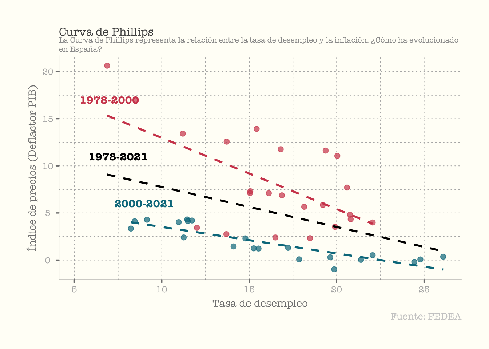
Código
### Curvas de Phillips # Crear columnas para los grupos de periodosdf10 <- df %>%filter(comunidad =="total", periodo >=1977) %>%select(comunidad, periodo, f_deflactor_pib, b_tasa_paro) %>%mutate(f_deflactor_pib = ((f_deflactor_pib -lag(f_deflactor_pib)) /lag(f_deflactor_pib)) *100) df10 <- df10 %>%mutate(periodo_grupo =case_when( periodo >=1977& periodo <=2000~"1977-2000", periodo >2000& periodo <=2021~"2000-2021", periodo >=1977& periodo <=2021~"1977-2021",TRUE~"Otro" ))# Gráfico de la Curva de Phillips con líneas para diferentes periodosp_phillips <-ggplot(df10, aes(x = b_tasa_paro, y = f_deflactor_pib, color = periodo_grupo)) +geom_point(alpha =0.7, size =2.25) +geom_smooth(method ='lm', se =FALSE, linetype =2) +annotate('text', x =7, y =17, label ='1978-2000', color ='#d1495b',family ='American Typewriter', fontface ='bold') +annotate('text', x =9, y =6, label ='2000-2021', color ='#00798c',family ='American Typewriter', fontface ='bold') +annotate('text', x =7.5, y =11, label ='1978-2021', color ='black',family ='American Typewriter', fontface ='bold') +labs(title ="Curva de Phillips",subtitle ="La Curva de Phillips representa la relación entre la tasa de desempleo y la inflación.\n¿Cómo ha evolucionado en España?",x ='Tasa de desempleo',y ='Índice de precios (Deflactor PIB)',caption ='Fuente: FEDEA',color ='Periodo') +scale_color_manual(values =c('#d1495b', '#00798c', '#fd5532')) +theme_void() +theme(text =element_text('American Typewriter', color ='grey30'),legend.position ='none',plot.title =element_textbox_simple(size =12, margin =margin(b =0.15, unit ='cm')),plot.subtitle =element_textbox_simple(size =8, color ='grey60',margin =margin(b =0.25, unit ='cm')),plot.background =element_rect(fill ='#fffef7', color ='#fffef7'),plot.caption =element_text(size =10, color ='grey80'),plot.margin =margin(1, 1, 1, 1, 'cm'),panel.grid =element_line(color ='grey70', linetype ='dotted'),axis.title =element_text(margin =margin(t =0.2, r =0.2, unit ='cm'), color ='grey50'),axis.title.y =element_text(angle =90),axis.text =element_text(color ='grey70', size =9,margin =margin(t =0.1, r =0.1, unit ='cm')),axis.line =element_line(color ='grey50'),axis.ticks =element_line(color ='grey50', size =0.6),axis.ticks.length =unit(0.10, 'cm'))# Añadir una capa de regresión para todo el conjunto de datos (discontinua)p_phillips <- p_phillips +geom_smooth(aes(group =1), method ='lm', se =FALSE, linetype =2, color ='black')
5.2 Comparación de Curvas de Phillips: España, Madrid y Andalucía
En este análisis, realizamos una comparación entre las Curvas de Phillips para España, Madrid y Andalucía. Estas representaciones gráficas exploran la relación entre la tasa de inflación y la tasa de desempleo en tres contextos diferentes: a nivel nacional, en la comunidad autónoma más rica (Madrid) y en una de las comunidades con mayores desafíos económicos (Andalucía).
Curva de Phillips para España: La Curva de Phillips a nivel nacional refleja la relación histórica entre inflación y desempleo en el conjunto de la economía española.
Curva de Phillips para Madrid: En el caso de Madrid, una de las comunidades más prósperas, la curva exhibe una pendiente más plana en comparación con la curva nacional. Esto sugiere que las variaciones en la tasa de desempleo en Madrid están asociadas con cambios menos pronunciados en la tasa de inflación.
Curva de Phillips para Andalucía: Contrastando con Madrid, la Curva de Phillips para Andalucía muestra una pendiente similar a la curva nacional, pero con niveles de desempleo más elevados. Esto indica que, aunque la sensibilidad entre inflación y desempleo es parecida a nivel nacional, Andalucía enfrenta mayores desafíos en términos de empleo.
### Comunidades CP# Filtrar datos por comunidades específicas y periododf_comunidades <- df %>%filter(comunidad %in%c("mad", "and", "total"), periodo >=1977& periodo <=2021) %>%select(comunidad, periodo, f_deflactor_pib, b_tasa_paro) %>%group_by(comunidad) %>%mutate(f_deflactor_pib = ((f_deflactor_pib -lag(f_deflactor_pib)) /lag(f_deflactor_pib)) *100) %>%ungroup()# Gráfico de la Curva de Phillips con una regresión para cada comunidadp_phillips_comunidades <-ggplot(df_comunidades, aes(x = b_tasa_paro, y = f_deflactor_pib, color = comunidad)) +geom_point(alpha =0.7, size =2.25) +annotate('text', x =33, y =5, label ='Andalucía', color ='#d1495b',family ='American Typewriter', fontface ='bold') +annotate('text', x =8, y =11, label ='España', color ='#00798c',family ='American Typewriter', fontface ='bold') +annotate('text', x =6, y =5, label ='Madrid', color ='black',family ='American Typewriter', fontface ='bold') +geom_smooth(method ='lm', se =FALSE, linetype =2) +labs(title ="Curva de Phillips por Comunidad Autónoma",subtitle ="Relación entre la tasa de desempleo y la inflación (1977-2021)",x ='Tasa de desempleo',y ='Índice de precios (Deflactor PIB)',caption ='Fuente: FEDEA',color ='Comunidad Autónoma') +theme_void() +theme(text =element_text('American Typewriter', color ='grey30'),legend.position ='none',plot.title =element_textbox_simple(size =12, margin =margin(b =0.15, unit ='cm')),plot.subtitle =element_textbox_simple(size =8, color ='grey60',margin =margin(b =0.25, unit ='cm')),plot.background =element_rect(fill ='#fffef7', color ='#fffef7'),plot.caption =element_text(size =10, color ='grey80'),plot.margin =margin(1, 1, 1, 1, 'cm'),panel.grid =element_line(color ='grey70', linetype ='dotted'),axis.title =element_text(margin =margin(t =0.2, r =0.2, unit ='cm'), color ='grey50'),axis.title.y =element_text(angle =90),axis.text =element_text(color ='grey70', size =9,margin =margin(t =0.1, r =0.1, unit ='cm')),axis.line =element_line(color ='grey50'),axis.ticks =element_line(color ='grey50', size =0.6),axis.ticks.length =unit(0.10, 'cm'))print(p_phillips_comunidades)
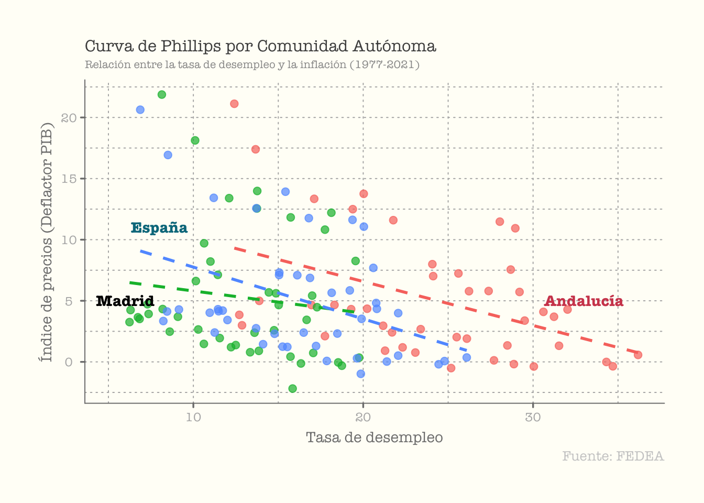
Código
### Comunidades CP# Filtrar datos por comunidades específicas y periododf_comunidades <- df %>%filter(comunidad %in%c("mad", "and", "total"), periodo >=1977& periodo <=2021) %>%select(comunidad, periodo, f_deflactor_pib, b_tasa_paro) %>%group_by(comunidad) %>%mutate(f_deflactor_pib = ((f_deflactor_pib -lag(f_deflactor_pib)) /lag(f_deflactor_pib)) *100) %>%ungroup()# Gráfico de la Curva de Phillips con una regresión para cada comunidadp_phillips_comunidades <-ggplot(df_comunidades, aes(x = b_tasa_paro, y = f_deflactor_pib, color = comunidad)) +geom_point(alpha =0.7, size =2.25) +annotate('text', x =33, y =5, label ='Andalucía', color ='#d1495b',family ='American Typewriter', fontface ='bold') +annotate('text', x =8, y =11, label ='España', color ='#00798c',family ='American Typewriter', fontface ='bold') +annotate('text', x =6, y =5, label ='Madrid', color ='black',family ='American Typewriter', fontface ='bold') +geom_smooth(method ='lm', se =FALSE, linetype =2) +labs(title ="Curva de Phillips por Comunidad Autónoma",subtitle ="Relación entre la tasa de desempleo y la inflación (1977-2021)",x ='Tasa de desempleo',y ='Índice de precios (Deflactor PIB)',caption ='Fuente: FEDEA',color ='Comunidad Autónoma') +theme_void() +theme(text =element_text('American Typewriter', color ='grey30'),legend.position ='none',plot.title =element_textbox_simple(size =12, margin =margin(b =0.15, unit ='cm')),plot.subtitle =element_textbox_simple(size =8, color ='grey60',margin =margin(b =0.25, unit ='cm')),plot.background =element_rect(fill ='#fffef7', color ='#fffef7'),plot.caption =element_text(size =10, color ='grey80'),plot.margin =margin(1, 1, 1, 1, 'cm'),panel.grid =element_line(color ='grey70', linetype ='dotted'),axis.title =element_text(margin =margin(t =0.2, r =0.2, unit ='cm'), color ='grey50'),axis.title.y =element_text(angle =90),axis.text =element_text(color ='grey70', size =9,margin =margin(t =0.1, r =0.1, unit ='cm')),axis.line =element_line(color ='grey50'),axis.ticks =element_line(color ='grey50', size =0.6),axis.ticks.length =unit(0.10, 'cm'))
6. Conclusión
En resumen, este análisis exhaustivo de los agregados macroeconómicos para España proporciona una visión integral de la evolución económica a lo largo de décadas. Desde el análisis del PIB hasta la relación entre inflación y desempleo a través de las Curvas de Phillips, cada sección revela tendencias y determinantes clave. Las comparaciones entre comunidades autónomas, como Madrid y Andalucía, resaltan disparidades regionales en la interacción entre indicadores económicos fundamentales.
La utilización de herramientas de programación en R y Quarto ha permitido una exploración profunda y visualmente impactante de los datos macroeconómicos. La observación de cambios significativos en la sensibilidad de la Curva de Phillips a lo largo del tiempo y las diferencias regionales subrayan la riqueza de la economía española en su complejidad y dinamismo.
Quiero expresar mi agradecimiento por este trabajo, que ha sido fundamental en mi proceso de aprendizaje en la asignatura “Programación y manejo de datos en la era del Big Data”. Este análisis no solo me ha proporcionado valiosas habilidades en R, sino que también ha contribuido significativamente a mi preparación para enfrentar desafíos en mi futuro profesional.
7. Fuentes
Ángel de la Fuente. (n.d.). Retrieved from https://fedea.net/angel-de-la-fuente/
AMECO Database. (n.d.). Retrieved from https://economy-finance.ec.europa.eu/economic-research-and-databases/economic-databases/ameco-database_en
BdeMores. (n.d.). Retrieved from https://www.sepg.pap.hacienda.gob.es/sitios/sepg/es-ES/Presupuestos/DocumentacionEstadisticas/Documentacion/paginas/basesdatosestudiosregionales.aspx
Ejecutar el código
---title: "Perspectivas Macro: Análisis de Agregados Económicos en España"output: shiny::shiny_documentauthor: - name: Juan Antonio Abello Durán affiliation: Universitat de València affiliation-url: https://www.uv.esdate: 2024-01-24 #--categories: [ BigData, macroeconomía, pib, desempleo, inflación] #--title-block-banner: true #- {true, false, "green","#AA0000"}title-block-banner-color: "white" #-"#FFFFFF" toc-depth: 3smooth-scroll: trueformat: html: #backgroundcolor: "#F1F3F4" #embed-resources: true link-external-newwindow: true #css: ./assets/my_css_file.css #- CUIDADO!!!!code-tools: truecode-link: true---## Agregados Macroeconómicos para EspañaBienvenido al análisis detallado de los agregados macroeconómicos clave para la economía española y sus regiones. Este trabajo, elaborado por Juan Antonio Abello Durán de la [Universitat de València](https://www.uv.es), se sumerge en variables cruciales como la producción, la tasa de desempleo y la inflación.### IntroducciónEl objetivo principal de este estudio es proporcionar una visión integral de la evolución económica de España, centrándose en aspectos fundamentales como el Producto Interno Bruto (PIB), la tasa de desempleo y la inflación. Utilizando herramientas de programación en R y la versatilidad de Quarto para la creación de documentos dinámicos, exploraremos los datos disponibles y ofreceremos una perspectiva única sobre el desarrollo económico a lo largo del tiempo. Asimismo, uno de los aspectos más interesantes de este trabajo fue la **limpieza de datos realizada para homogeneizar las distintas bases de datos utilizadas**.#### **Datos**Los datos utilizados en este análisis han sido sacados de conocidas bases de datos macroeconómicos para la economía española y sus regiones. En concreto, se utlizaron las siguientes bases:- [FEDEA](https://fedea.net/datos): Se utilizaron las Series largas de algunos agregados económicos y demográficos regionales que contiene información de diversas varibles desde 1955 hasta 2021. Su autor, [Ángel de la Fuente](https://fedea.net/angel-de-la-fuente/#), un economista con un doctorado en Ciencias Económicas por la Universidad de Pennsylvania. Ha trabajado como profesor asociado, consultor para organismos internacionales y es actualmente el Director Ejecutivo de la Fundación de Estudios de Economía Aplicada (FEDEA) desde 2014. Además, ha recibido premios por su destacada labor, incluyendo el accésit al I Premio de la Fundación Banco Herrero en 2002.- [BdeMores](https://www.sepg.pap.hacienda.gob.es/sitios/sepg/es-ES/Presupuestos/DocumentacionEstadisticas/Documentacion/paginas/basesdatosestudiosregionales.aspx): Una base de datos anuales de magnitudes macroeconómicas regionales de la economía española, compatible con las bases nacionales BDREMS. Iniciada en 1998, respalda los modelos macroeconómicos REMS y EREMS utilizados por la Dirección General de Presupuestos del Ministerio de Hacienda y Función Pública. Las magnitudes están clasificadas por región y rama de actividad, valoradas a precios corrientes y/o constantes de 2015, siguiendo los criterios del SEC2010. En la actualización de mayo de 2023, se incluyen revisiones relacionadas con la reclasificación temporal de la SAREB en el Sector de las Administraciones Públicas, conforme al acuerdo entre Eurostat y las autoridades estadísticas españolas.- [AMECO](https://economy-finance.ec.europa.eu/economic-research-and-databases/economic-databases/ameco-database_en): La base de datos macroeconómica anual de la Dirección General de Asuntos Económicos y Financieros de la Comisión Europea. Utilizada para análisis e informes, incluye datos de la UE, la zona euro, Estados miembros, países candidatos y otros de la OCDE, abarcando más de 40 países. Organizada en dieciocho capítulos, abarca desde población y empleo hasta principales agregados de cuentas nacionales, sectores y ajuste cíclico de variables financieras públicas. A partir de 2002, los países de la zona euro publican series nacionales en euros, convirtiendo datos en moneda nacional antes de 2002 utilizando el tipo de cambio fijo al euro. A pesar del cambio de denominación a euros, las comparaciones y agregaciones deben basarse en series históricas establecidas en ECU hasta 1998 y su continuación estadística en EUR desde 1999 en adelante. En el presente trabajo, se utilizó AMECO para obtener datos sobre el PIB potencial y la tasa de desempleo estructural (NAIRU) a la hora de realizar los análisis.#### **Configuración y Herramientas Utilizadas**Para realizar este análisis, hemos empleado una variedad de paquetes de R, desde `tidyverse` para manipulación de datos hasta `ggplot2` y `plotly` para la creación de gráficos interactivos. Además, hemos utilizado Quarto, una herramienta potente para la generación de documentos enriquecidos, que nos permite combinar texto, código y visualizaciones de manera efectiva. Las librerías utilizadas son las siguientes:```{r}#- 0) Librerías utilizadas -------------------------------------------------------library(tidyverse)library(knitr)library(kableExtra)library(ggplot2)library(ggthemes)library(dplyr)library(plotly)library(openxlsx)library(countrycode)library(ggimage)library(gganimate)library(lubridate)library(sf)library(mapSpain)library(DT)library(gt)library(patchwork)library(ggplot2)library(ggtext)library(vembedr)```#### **Estructura del trabajo**La estructura del trabajo se divide en un análisis del Producto Interior Bruto (PIB), posteriormente se realiza un análisis de las Tasas de Desempleo, la evolución de la inflación y por último, se concluye con la representación gráfica de un par de Curvas de Phillips. A continuación, presentamos algunas de las visualizaciones clave obtenidas a partir del análisis de los datos macroeconómicos de España.---### 1. Análisis del PIBEl **Producto Interno Bruto (PIB)** constituye un indicador fundamental que refleja la salud y la dinámica económica de un país. En este segmento de nuestro estudio, exploraremos detalladamente la evolución del PIB en el contexto de la economía española. Este análisis permitirá arrojar luz sobre las tendencias históricas, identificar patrones significativos y, en última instancia, comprender mejor los factores que impulsan el crecimiento económico.#### **1.1 Evolución del PIB real y el PIB potencial**El **PIB real** representa el valor total de los bienes y servicios producidos por una economía, ajustado a la inflación. Por otro lado, el **PIB potencial** denota la capacidad máxima de producción de la economía en un periodo sin generar presiones inflacionarias. Analizando la evolución de ambos, identificamos no solo las variaciones a lo largo de las décadas, sino también las discrepancias entre el rendimiento económico real y su capacidad subyacente. A través de herramientas de visualización, examinamos gráficamente esta evolución para obtener una comprensión sobre el crecimiento económico y las fluctuaciones cíclicas que han marcado su desarrollo.::: panel-tabset## Gráfico animado```{r}#| code-fold: true#| warning: false# Importar y arreglar los datosruta <-"./datos/spain.xlsx"df <- rio::import(ruta) df <- df %>%slice(-1) %>%select(-c(24, 25, 26)) %>%mutate_at(vars(4:ncol(.)), as.numeric)#### PIB### Evolución del PIB y del PIB potencial df1 <- df %>%select(comunidad, periodo, PIB_real_2015, pib_potencial) %>%filter(comunidad =="total", periodo >=1965) %>%mutate(PIB_real_2015 =round(PIB_real_2015, 3),pib_potencial =round(pib_potencial, 3)) %>%mutate(periodo =as.numeric(periodo))# Gráfico de la evolución del PIB real y potencialp1 <-ggplot(df1, aes(x = periodo, group =1)) +geom_line(aes(y = PIB_real_2015, color ="PIB Real"), size =1, linetype ="solid") +geom_line(aes(y = pib_potencial, color ="PIB Potencial"), size =1, linetype ="dashed") +geom_point(aes(y = PIB_real_2015, color ="PIB Real"), size =1) +geom_point(aes(y = pib_potencial, color ="PIB Potencial"), size =1) +labs(title ="Evolución del PIB Real y Potencial",x ="Año",y ="Valor",color ="Categoría", caption ="Fuente: AMECO") +scale_color_manual(values =c("PIB Real"="blue", "PIB Potencial"="red")) +theme_stata() +theme(axis.text.x =element_text(angle =90, vjust =0.5, hjust =1)) +guides(color =guide_legend(title ="Categoría"))# Crea la animaciónp_animated <- p1 +transition_reveal(periodo) +enter_fade() +exit_fade()# Visualiza la animaciónanimate(p_animated, nframes =200, fps =20, end_pause =0)```## Gráfico sin animar```{r}#| code-fold: true#| warning: falsep1```## Código```{r}#| warning: false# Importar y arreglar los datosruta <-"./datos/spain.xlsx"df <- rio::import(ruta) df <- df %>%slice(-1) %>%select(-c(24, 25, 26)) %>%mutate_at(vars(4:ncol(.)), as.numeric)#### PIB### Evolución del PIB y del PIB potencial df1 <- df %>%select(comunidad, periodo, PIB_real_2015, pib_potencial) %>%filter(comunidad =="total", periodo >=1965) %>%mutate(PIB_real_2015 =round(PIB_real_2015, 3),pib_potencial =round(pib_potencial, 3)) %>%mutate(periodo =as.numeric(periodo))# Gráfico de la evolución del PIB real y potencialp1 <-ggplot(df1, aes(x = periodo, group =1)) +geom_line(aes(y = PIB_real_2015, color ="PIB Real"), size =1, linetype ="solid") +geom_line(aes(y = pib_potencial, color ="PIB Potencial"), size =1, linetype ="dashed") +geom_point(aes(y = PIB_real_2015, color ="PIB Real"), size =1) +geom_point(aes(y = pib_potencial, color ="PIB Potencial"), size =1) +labs(title ="Evolución del PIB Real y Potencial",x ="Año",y ="Valor",color ="Categoría", caption ="Fuente: AMECO") +scale_color_manual(values =c("PIB Real"="blue", "PIB Potencial"="red")) +theme_stata() +theme(axis.text.x =element_text(angle =90, vjust =0.5, hjust =1)) +guides(color =guide_legend(title ="Categoría"))```:::------------------------------------------------------------------------#### **1.2 Diferencial porcentual entre el PIB real y el PIB potencial**En complemento al análisis detallado de la evolución del PIB real y el PIB potencial (1.1), exploraremos el diferencial porcentual entre ambos indicadores en esta sección. Este enfoque proporcionará un apoyo visual a la comprensión de las variaciones entre el rendimiento económico real y su capacidad potencial.Este análisis específico nos permitirá identificar periodos de sobre o subutilización de la capacidad económica, proporcionando así una perspectiva más completa sobre la eficiencia y resiliencia de la economía en diversas coyunturas.Cuando la diferencia entre el PIB real y el PIB potencial es positiva, indica que la economía está operando por encima de su capacidad máxima de producción. Esto puede traducirse en presiones inflacionarias, ya que la demanda supera la oferta disponible. Por otro lado, una diferencia negativa sugiere que la economía está operando por debajo de su capacidad, indicando subutilización de recursos y posible desempleo.**Ejemplos de Diferencia Negativa:**1. **Crisis de la Burbuja Inmobiliaria (2008 y posteriores):** En este período, la diferencia negativa entre el PIB real y el PIB potencial en España señaló una significativa subutilización de la capacidad económica. La contracción en el sector inmobiliario y financiero llevó a una recesión, generando desempleo y disminuyendo la producción por debajo de su potencial.2. **Crisis del COVID-19 (2020):** Durante la crisis provocada por la pandemia, la diferencia negativa entre el PIB real y el PIB potencial reflejó una brusca contracción económica. Las restricciones y la disminución de la demanda llevaron a una caída en la producción, generando una brecha significativa. Las medidas de confinamiento y la incertidumbre económica contribuyeron a la subutilización de recursos.::: panel-tabset## Gráfico```{r}#| code-fold: true#| warning: false### Gráfico con la diferencia porcentual entre PIB real y PIB potencial df2 <- df %>%select(comunidad, periodo, diferencia_real_potencial) %>%filter(comunidad =="total", periodo >=1965) %>%mutate(diferencia_real_potencial =round(diferencia_real_potencial, 3),periodo =as.numeric(periodo)) # Crear el gráfico con etiquetas en el eje x en verticalp2 <-ggplot(df2, aes(x = periodo, y = diferencia_real_potencial, group =1)) +geom_hline(yintercept =0, linetype ="dashed", color ="red") +geom_line(color ="blue", size =1.5) +geom_ribbon(aes(ymin =-10, ymax = diferencia_real_potencial), fill ="blue", alpha =0.1) +labs(title ="Diferencia entre PIB Real y Potencial",x ="Año",y ="Diferencia Real-Potencial", caption ="Fuente: AMECO") +theme_stata() +theme(axis.text.x =element_text(angle =90, vjust =0.5, hjust =1)) +ylim(c(-10, 10)) +scale_x_continuous(breaks =seq(min(df2$periodo), max(df2$periodo), by =2))# Mostrar el gráficoprint(p2)```## Código```{r}#| warning: false### Gráfico con la diferencia porcentual entre PIB real y PIB potencial df2 <- df %>%select(comunidad, periodo, diferencia_real_potencial) %>%filter(comunidad =="total", periodo >=1965) %>%mutate(diferencia_real_potencial =round(diferencia_real_potencial, 3),periodo =as.numeric(periodo)) # Crear el gráfico con etiquetas en el eje x en verticalp2 <-ggplot(df2, aes(x = periodo, y = diferencia_real_potencial, group =1)) +geom_hline(yintercept =0, linetype ="dashed", color ="red") +geom_line(color ="blue", size =1.5) +geom_ribbon(aes(ymin =-10, ymax = diferencia_real_potencial), fill ="blue", alpha =0.1) +labs(title ="Diferencia entre PIB Real y Potencial",x ="Año",y ="Diferencia Real-Potencial", caption ="Fuente: AMECO") +theme_stata() +theme(axis.text.x =element_text(angle =90, vjust =0.5, hjust =1)) +ylim(c(-10, 10)) +scale_x_continuous(breaks =seq(min(df2$periodo), max(df2$periodo), by =2))```:::------------------------------------------------------------------------### Pespectivas para la economía española en 2024Según BBVA Research, el 2024 será un año de desaceleración para el crecimiento de las economías avanzadas. Además, las tensiones geopolíticas son significativas, incluyendo la expectativa de elecciones en EE. UU., en el Parlamento Europeo, entre otras. Los Bancos Centrales deberán finalizar la carrera por normalizar la inflación. La desinflación ha sido más rápida de lo anticipado. Será un año de ajuste fiscal para la eurozona con posibles efectos de contagio que podrían afectar a la economía española. Las elecciones en el Parlamento Europeo ponen de manifiesto la senda que seguirá la UE y una posible polarización que aumentaría la incertidumbre en la política económica.España experimentó un crecimiento del 2,4% en 2023, el doble de lo previsto a finales de 2022, impulsado por políticas fiscales expansivas. La industria española tuvo un mejor desempeño que la industria europea gracias a la ventaja comparativa de no depender tanto del gas ruso. Además, aumentó la demanda interna, tanto pública como privada. También se observa un aumento en la migración: más consumo, mayor demanda y más empleo, entre otros. Se prevé que estas tendencias continúen en 2024, con un crecimiento superior al promedio europeo. Dado que España es una economía pequeña y muy abierta, estará altamente sensible a la incertidumbre y a las políticas económicas globales.```{r}#| echo = FALSE,#| out.width = "100%"library(vembedr)embed_url("https://www.youtube.com/watch?v=bgfJ_zOX1YA")```--- #### **1.3 Comparación entre el PIB per cápita real y el PIB per cápita nominal**En esta sección, contrastamos el PIB per cápita real y nominal, siendo el año base para el PIB real el 2016. El PIB nominal, reflejando el valor total sin ajustes inflacionarios, tiende a estar por debajo del PIB real debido al impacto de la inflación.Realizar el análisis en torno al PIB pc real en lugar del PIB pc nominal es esencial por varias razones fundamentales. En primer lugar, el PIB pc real ajusta los valores de producción por inflación, ofreciendo una comparación más precisa del crecimiento económico a lo largo del tiempo al eliminar el efecto de los cambios en los precios. Esto resulta crucial para evaluar el aumento real en la producción y entender el verdadero progreso económico. En segundo lugar, el PIB pc real refleja de manera más precisa el bienestar real de la población al capturar no solo el crecimiento nominal, sino también el aumento real en los ingresos y niveles de vida. Por el contrario, el PIB pc nominal puede proporcionar interpretaciones engañosas, ya que los cambios en los valores pueden deberse simplemente a la inflación, sin implicar un cambio sustancial en la capacidad adquisitiva de la población.En el análisis del PIB per cápita real desde 1955 hasta la crisis financiera de 2008, se observa una marcada tendencia de crecimiento, indicativa de un período de desarrollo económico en España. Sin embargo, a partir de 2008, tras la crisis de la burbuja inmobiliaria, se evidencia un relativo estancamiento en el crecimiento del PIB per cápita real. Este fenómeno refleja los desafíos económicos y las fluctuaciones asociadas con eventos significativos.::: panel-tabset## Gráfico```{r}#| code-fold: true#| warning: false### Evolución del PIB per cápita df3 <- df %>%select(comunidad, periodo, f_deflactor_pib, F_PIB_real_2016, f_población) %>%filter(comunidad =="total") %>%mutate(pib_nominal = F_PIB_real_2016 * f_deflactor_pib ) %>%mutate(F_PIB_real_2016 = F_PIB_real_2016*1000) %>%mutate(pib_nominal = pib_nominal*1000) %>%mutate(pibpc_real = F_PIB_real_2016 / f_población) %>%mutate(pibpc_nominal = pib_nominal / f_población)# Crear el gráfico interactivo con barras y líneap3 <-ggplot(df3, aes(x =as.factor(periodo), group =1)) +# Convierte periodo a factorgeom_bar(aes(y = pibpc_real, fill ="PIB per cápita real"), stat ="identity", position ="dodge", color ="black", alpha =0.7) +geom_ribbon(aes(ymin =0, ymax = pibpc_nominal), fill ="blue", alpha =0.1) +geom_line(aes(y = pibpc_nominal, color ="PIB per cápita nominal"), size =0.5) +geom_point(aes(y = pibpc_nominal), color ="blue", size =2) +labs(title ="Comparación entre PIB per cápita nominal y real",x ="Año",y ="PIB per cápita real",fill ="Categoría",color ="PIB per cápita nominal",caption ="Fuente: FEDEA") +scale_fill_manual(values =c("PIB per cápita real"="#FF9999"), guide ="none") +# Deshabilitar la leyenda para fillscale_color_manual(values =c("PIB per cápita nominal"="blue"), guide ="none") +# Deshabilitar la leyenda para colorscale_x_discrete(breaks =unique(df3$periodo[seq(1, nrow(df3), by =5)])) +# Muestra los años de 5 en 5theme_stata(base_family ="") +theme(legend.position ="bottom", axis.text.x =element_text(angle =45, hjust =1))# Convertir a gráfico interactivo con plotlyp3 <-ggplotly(p3)# Mostrar el gráfico interactivop3```## Código```{r}#| warning: false### Evolución del PIB per cápita df3 <- df %>%select(comunidad, periodo, f_deflactor_pib, F_PIB_real_2016, f_población) %>%filter(comunidad =="total") %>%mutate(pib_nominal = F_PIB_real_2016 * f_deflactor_pib ) %>%mutate(F_PIB_real_2016 = F_PIB_real_2016*1000) %>%mutate(pib_nominal = pib_nominal*1000) %>%mutate(pibpc_real = F_PIB_real_2016 / f_población) %>%mutate(pibpc_nominal = pib_nominal / f_población)# Crear el gráfico interactivo con barras y líneap3 <-ggplot(df3, aes(x = periodo, group =1)) +geom_bar(aes(y = pibpc_real, fill ="PIB per cápita real"), stat ="identity", position ="dodge", color ="black", alpha =0.7) +geom_ribbon(aes(ymin =0, ymax = pibpc_nominal), fill ="blue", alpha =0.1) +geom_line(aes(y = pibpc_nominal, color ="PIB per cápita nominal"), size =0.5) +geom_point(aes(y = pibpc_nominal), color ="blue", size =2) +labs(title ="Comparación entre PIB per cápita nominal y real",x ="Año",y ="PIB per cápita real",fill ="Categoría",color ="PIB per cápita nominal",caption ="Fuente: FEDEA") +scale_fill_manual(values =c("PIB per cápita real"="#FF9999")) +scale_color_manual(values =c("PIB per cápita nominal"="blue")) +theme_stata(base_family ="") +theme(legend.position ="bottom", axis.text.x =element_text(angle =90, hjust =0.5))```:::------------------------------------------------------------------------#### **1.4 Tabla con el PIB pc real para las Comunidades Autónomas desde 1955**En esta sección, presentaremos una tabla detallada que desglose el PIB per cápita real para las Comunidades Autónomas de España desde 1955 hasta la fecha actual. Esta tabla proporcionará una visión exhaustiva de la distribución del crecimiento económico a nivel regional, destacando posibles disparidades y patrones de desarrollo. Al presentar los datos de manera estructurada, facilitaremos la identificación de tendencias y la comprensión de la contribución relativa de cada región al panorama económico general del país.::: panel-tabset## Tabla```{r}#| code-fold: true#| warning: false### Tabla de scroll con pib pc real para las comunidadesnuevos_nombres <-c("Andalucía", "Aragón", "Asturias", "Islas Baleares", "Islas Canarias", "Cantabria", "Castilla y León", "Castilla - La Mancha", "Cataluña", "Comunidad Valenciana", "Extremadura", "Galicia", "Comunidad de Madrid", "Murcia", "Navarra", "País Vasco", "La Rioja", "Ceuta y Melilla", "Total")## Tabla que más me gusta df4 <- df %>%select(comunidad, periodo, F_PIB_real_2016, f_población) %>%mutate(F_PIB_real_2016 = F_PIB_real_2016 *1000) %>%mutate(pibpc_real = F_PIB_real_2016 / f_población) %>%select(-c(3, 4)) %>%pivot_wider(names_from = periodo, values_from = pibpc_real) %>%mutate(comunidad = nuevos_nombres)df4 <- df4 %>%mutate(across(where(is.numeric), \(x) round(x, digits =2)))df4 %>%gt(rowname_col ="comunidad") %>%tab_header(title ="PIB per cápita por Comunidades Autónomas", subtitle ="Euros constantes de 2015") %>%tab_source_note(md("Fuente: [BdeMores](https://www.sepg.pap.hacienda.gob.es/sitios/sepg/es-ES/Presupuestos/DocumentacionEstadisticas/Documentacion/paginas/basesdatosestudiosregionales.aspx)")) %>% gtExtras::gt_theme_pff() ```## Código```{r}#| warning: false### Tabla de scroll con pib pc real para las comunidadesnuevos_nombres <-c("Andalucía", "Aragón", "Asturias", "Islas Baleares", "Islas Canarias", "Cantabria", "Castilla y León", "Castilla - La Mancha", "Cataluña", "Comunidad Valenciana", "Extremadura", "Galicia", "Comunidad de Madrid", "Murcia", "Navarra", "País Vasco", "La Rioja", "Ceuta y Melilla", "Total")## Tabla que más me gusta df4 <- df %>%select(comunidad, periodo, F_PIB_real_2016, f_población) %>%mutate(F_PIB_real_2016 = F_PIB_real_2016 *1000) %>%mutate(pibpc_real = F_PIB_real_2016 / f_población) %>%select(-c(3, 4)) %>%pivot_wider(names_from = periodo, values_from = pibpc_real) %>%mutate(comunidad = nuevos_nombres)df4 <- df4 %>%mutate(across(where(is.numeric), \(x) round(x, digits =2)))```:::------------------------------------------------------------------------### 2. Análisis del DesempleoEn esta sección, nos adentraremos en el análisis del desempleo, examinando la evolución de la Tasa de Desempleo y la Tasa de Desempleo Estructural (NAIRU). Posteriormente, de la evolución de la población activa (parados y ocupados). Por último, la evolución de la tasa de desempleo por Comunidades Autónomas.#### **2.1 Evolución de la Tasa de Desempleo y la Tasa de Desempleo Estructural (NAIRU)**El enfoque principal será comprender la dinámica del empleo en España a lo largo del tiempo. Exploraremos la variación en la Tasa de Desempleo, destacando momentos críticos que han impactado el mercado laboral. Además, examinaremos la Tasa de Desempleo Estructural (NAIRU), que representa la tasa de desempleo natural en una economía sin presiones inflacionarias. Este análisis nos permitirá evaluar no solo las fluctuaciones a corto plazo, sino también comprender las condiciones subyacentes del mercado laboral a lo largo de las décadas.::: panel-tabset## Gráfico animado```{r}#| code-fold: true#| warning: false#### Desempleo### Tasa de desempleo vs NAIRUdfn <- df %>%select(comunidad, periodo, nairu, b_tasa_paro) %>%filter(comunidad =="total", periodo >=1977) %>%mutate(nairu =round(nairu, 3),b_tasa_paro =round(b_tasa_paro, 3)) %>%mutate(periodo =as.numeric(periodo))# Gráfico de la evolución del NAIRU y paradospn <-ggplot(dfn, aes(x = periodo, group =1)) +geom_line(aes(y = nairu, color ="NAIRU"), size =1, linetype ="solid") +geom_line(aes(y = b_tasa_paro, color ="Tasa de Paro"), size =1, linetype ="dashed") +geom_point(aes(y = nairu, color ="NAIRU"), size =1) +geom_point(aes(y = b_tasa_paro, color ="Tasa de Paro"), size =1) +labs(title ="Evolución de la Tasa de Desempleo y NAIRU",x ="Año",y ="Valor",color ="Categoría", caption ="Fuente: AMECO") +scale_color_manual(values =c("NAIRU"="blue", "Tasa de Paro"="red")) +theme_stata() +theme(axis.text.x =element_text(angle =90, vjust =0.5, hjust =1)) +guides(color =guide_legend(title ="Categoría"))# Crea la animaciónp_animated2 <- pn +transition_reveal(periodo) +enter_fade() +exit_fade()# Visualiza la animaciónanimate(p_animated2, nframes =200, fps =20, end_pause =0)```## Gráfico sin animar```{r}#| code-fold: true#| warning: falsepn```## Código```{r}#| warning: false#### Desempleo### Tasa de desempleo vs NAIRUdfn <- df %>%select(comunidad, periodo, nairu, b_tasa_paro) %>%filter(comunidad =="total", periodo >=1977) %>%mutate(nairu =round(nairu, 3),b_tasa_paro =round(b_tasa_paro, 3)) %>%mutate(periodo =as.numeric(periodo))# Gráfico de la evolución del NAIRU y paradospn <-ggplot(dfn, aes(x = periodo, group =1)) +geom_line(aes(y = nairu, color ="NAIRU"), size =1, linetype ="solid") +geom_line(aes(y = b_tasa_paro, color ="Tasa de Paro"), size =1, linetype ="dashed") +geom_point(aes(y = nairu, color ="NAIRU"), size =1) +geom_point(aes(y = b_tasa_paro, color ="Tasa de Paro"), size =1) +labs(title ="Evolución de la Tasa de Desempleo y NAIRU",x ="Año",y ="Valor",color ="Categoría", caption ="Fuente: AMECO") +scale_color_manual(values =c("NAIRU"="blue", "Tasa de Paro"="red")) +theme_stata() +theme(axis.text.x =element_text(angle =90, vjust =0.5, hjust =1)) +guides(color =guide_legend(title ="Categoría"))```:::------------------------------------------------------------------------#### **2.2 Diferencial porcentual entre la Tasa de Desempleo y la Tasa de Desempleo Estructural (NAIRU)**En esta sección, nos enfocaremos en el Diferencial porcentual entre la Tasa de Desempleo y la Tasa de Desempleo Estructural (NAIRU). Este análisis proporcionará una perspectiva detallada sobre las brechas entre la tasa de desempleo actual y la tasa de desempleo considerada natural en condiciones de equilibrio. Podemos destacar:- **Durante las décadas de los 80 y 90** en España, se observó que las tasas de desempleo estuvieron consistentemente por encima de la Tasa de Desempleo Estructural (NAIRU). Este fenómeno puede atribuirse a varios factores, entre ellos, la transición económica y la modernización industrial que caracterizaron esos períodos. Las reformas estructurales, aunque necesarias para la adaptación a la economía global, generaron desajustes temporales en el mercado laboral. Los cambios en la estructura productiva y la adopción de nuevas tecnologías llevaron a una destrucción de empleo en ciertos sectores, contribuyendo a tasas de desempleo elevadas.- **Tras la crisis financiera de 2008**, se evidenció un aumento significativo en la tasa de desempleo por encima de la NAIRU. La recesión económica y la contracción en diversos sectores, particularmente en la construcción, provocaron una rápida pérdida de empleo. La recuperación posterior fue gradual, pero la tasa de desempleo permaneció elevada durante un tiempo, reflejando las secuelas de la crisis.- **En contraste, durante la crisis del COVID-19**, las medidas gubernamentales, especialmente los Expedientes de Regulación Temporal de Empleo (ERTEs), jugaron un papel crucial. Estos programas de apoyo mitigaron la destrucción masiva de empleo al proporcionar un mecanismo de suspensión temporal de los contratos laborales. Esto evitó que la tasa de desempleo se disparara por encima de la NAIRU, ofreciendo estabilidad al mercado laboral y resaltando la eficacia de las políticas de respuesta ante crisis económicas.::: panel-tabset## Gráfico```{r}#| code-fold: true#| warning: false### Gráfico con la diferencia porcentual entre PIB real y PIB potencial dfd <- df %>%select(comunidad, periodo, nairu, b_tasa_paro) %>%filter(comunidad =="total", periodo >=1977) %>%mutate(nairu =round(nairu, 3),b_tasa_paro =round(b_tasa_paro, 3)) %>%mutate(periodo =as.numeric(periodo)) %>%mutate(diferencia_desempleo = b_tasa_paro - nairu)pd <-ggplot(dfd, aes(x = periodo, y = diferencia_desempleo, group =1)) +geom_hline(yintercept =0, linetype ="dashed", color ="red") +geom_line(color ="blue",size =1.5) +geom_ribbon(aes(ymin =-10, ymax = diferencia_desempleo), fill ="blue", alpha =0.1) +labs(title ="Diferencia entre Tasa de desempleo y NAIRU",x ="Año",y ="Diferencia entre Tasa de desempleo y NAIRU", caption ="Fuente: AMECO") +theme_stata() +theme(axis.text.x =element_text(angle =90, vjust =0.5, hjust =1)) +ylim(c(-10, 10))# Mostrar el gráficoprint(pd)```## Código```{r}#| warning: false### Gráfico con la diferencia porcentual entre PIB real y PIB potencial dfd <- df %>%select(comunidad, periodo, nairu, b_tasa_paro) %>%filter(comunidad =="total", periodo >=1977) %>%mutate(nairu =round(nairu, 3),b_tasa_paro =round(b_tasa_paro, 3)) %>%mutate(periodo =as.numeric(periodo)) %>%mutate(diferencia_desempleo = b_tasa_paro - nairu)pd <-ggplot(dfd, aes(x = periodo, y = diferencia_desempleo, group =1)) +geom_hline(yintercept =0, linetype ="dashed", color ="red") +geom_line(color ="blue",size =1.5) +geom_ribbon(aes(ymin =-10, ymax = diferencia_desempleo), fill ="blue", alpha =0.1) +labs(title ="Diferencia entre Tasa de desempleo y NAIRU",x ="Año",y ="Diferencia entre Tasa de desempleo y NAIRU", caption ="Fuente: AMECO") +theme_stata() +theme(axis.text.x =element_text(angle =90, vjust =0.5, hjust =1)) +ylim(c(-10, 10))```:::------------------------------------------------------------------------#### **2.3 Evolución de la Población Activa: Parados y Ocupados**El análisis de la Población Activa proporcionará una visión completa de la participación laboral, permitiendo entender mejor las tendencias y desafíos en la oferta y la demanda de empleo en distintos períodos económicos.La ecuación de la Población Activa (PA) se desglosa en dos componentes: los Ocupados (O) y los Parados (P). A partir de esta ecuación, se derivan varios indicadores económicos clave:1. **Tasa de Actividad (TA):** La Tasa de Actividad mide la proporción de la población en edad de trabajar que está activamente participando en el mercado laboral, ya sea empleada o buscando empleo. Se calcula como (PA / Población en Edad de Trabajar (PET)) \* 100.2. **Tasa de Ocupación (TO):** La Tasa de Ocupación indica la proporción de la población en edad de trabajar que está actualmente empleada. Se determina como (O / PET) \* 100.3. **Tasa de Paro (TP):** La Tasa de Paro mide el porcentaje de la población activa que está desempleada, es decir, busca empleo pero no lo encuentra. Se expresa como (P / PA) \* 100.Estos indicadores proporcionan una comprensión detallada de la dinámica del mercado laboral. La Tasa de Actividad refleja la participación general en el mercado laboral, la Tasa de Ocupación destaca la proporción de personas empleadas, y la Tasa de Paro señala la prevalencia del desempleo. Estos indicadores son fundamentales para evaluar el rendimiento económico y la salud del mercado laboral en diferentes contextos y períodos.::: panel-tabset## Gráfico```{r}#| code-fold: true#| warning: false### Como han evolucionado los parados y ocupados a lo largo del tiempo df5 <- df %>%select(comunidad, periodo, f_parados, f_ocupados) %>%filter(comunidad =="total", periodo >=1965) %>%mutate(f_parados =round(f_parados, 3),f_ocupados =round(f_ocupados, 3)) %>%mutate(periodo =as.numeric(periodo))# Crear el gráfico con ggplot2gg_barras_apiladas <-ggplot(df5, aes(x = periodo, fill =factor(comunidad))) +geom_bar(aes(y = f_ocupados, color ="Ocupados"), stat ="identity", position ="stack", alpha =0.7) +geom_bar(aes(y = f_parados, color ="Parados"), stat ="identity", position ="stack", alpha =0.7) +labs(title ="Comparación de Ocupados y Parados en España",x ="Periodo",y ="Número de Personas",color ="Categoría", caption ="Fuente: FEDEA") +scale_fill_manual(values =c("Ocupados"="blue", "Parados"="red")) +theme_stata()# Imprimir el gráficoprint(gg_barras_apiladas)```## Código```{r}#| warning: false### Como han evolucionado los parados y ocupados a lo largo del tiempo df5 <- df %>%select(comunidad, periodo, f_parados, f_ocupados) %>%filter(comunidad =="total", periodo >=1965) %>%mutate(f_parados =round(f_parados, 3),f_ocupados =round(f_ocupados, 3)) %>%mutate(periodo =as.numeric(periodo))# Crear el gráfico con ggplot2gg_barras_apiladas <-ggplot(df5, aes(x = periodo, fill =factor(comunidad))) +geom_bar(aes(y = f_ocupados, color ="Ocupados"), stat ="identity", position ="stack", alpha =0.7) +geom_bar(aes(y = f_parados, color ="Parados"), stat ="identity", position ="stack", alpha =0.7) +labs(title ="Comparación de Ocupados y Parados en España",x ="Periodo",y ="Número de Personas",color ="Categoría", caption ="Fuente: FEDEA") +scale_fill_manual(values =c("Ocupados"="blue", "Parados"="red")) +theme_stata()```:::------------------------------------------------------------------------#### **2.4 Evolución a lo largo del tiempo: Tasa de Desempleo por Comunidad Autónoma**En esta sección, se presentarán cuatro gráficos que ilustran la evolución temporal de la Tasa de Desempleo por Comunidad Autónoma en momentos clave: 1977, 1995, 2007 y 2021. Cada gráfico proporcionará una representación visual de cómo ha variado el desempleo en las diferentes regiones en estos años específicos. Más adelante en la presentación se utilizarán mapas para ofrecer una representación aún más gráfica y detallada de la evolución de la Tasa de Desempleo por Comunidad Autónoma.::: panel-tabset## Año 1977```{r}#| code-fold: true#| warning: false### Tasa de desempleo df6 <- df %>%select(comunidad, periodo, b_tasa_paro) %>%filter(periodo >=1977) %>%mutate(b_tasa_paro =round(b_tasa_paro, 2)) %>%mutate(periodo =as.numeric(periodo)) # Filtrar para el año 1977df6_1977 <- df6 %>%filter(periodo ==1977) %>%mutate(comunidad = nuevos_nombres) %>%filter(comunidad !="Ceuta y Melilla")# Ordenar df6_1977 de mayor a menor según la columna b_tasa_parodf6_1977 <- df6_1977 %>%arrange(desc(b_tasa_paro))# Filtrar para el año 1995df6_1995 <- df6 %>%filter(periodo ==1995) %>%mutate(comunidad = nuevos_nombres) %>%filter(comunidad !="Ceuta y Melilla")# Ordenar df6_1995 de mayor a menor según la columna b_tasa_parodf6_1995 <- df6_1995 %>%arrange(desc(b_tasa_paro))# Filtrar para el año 2007df6_2007 <- df6 %>%filter(periodo ==2007) %>%mutate(comunidad = nuevos_nombres) %>%filter(comunidad !="Ceuta y Melilla")# Ordenar df6_1977 de mayor a menor según la columna b_tasa_parodf6_2007 <- df6_2007 %>%arrange(desc(b_tasa_paro))# Filtrar para el año 2021df6_2021 <- df6 %>%filter(periodo ==2021) %>%mutate(comunidad = nuevos_nombres) %>%filter(comunidad !="Ceuta y Melilla")# Ordenar df6_2021 de mayor a menor según la columna b_tasa_parodf6_1977 <- df6_2021 %>%arrange(desc(b_tasa_paro))# Función para crear un gráfico de barras para la tasa de parocrear_grafico <-function(data, title) {ggplot(data, aes(x =reorder(comunidad, b_tasa_paro), y = b_tasa_paro, fill = comunidad)) +geom_bar(stat ="identity") +labs(title = title, x ="Comunidad Autónoma", y ="Tasa de Paro") +theme_stata() +theme(axis.text.x =element_text(angle =45, hjust =1))}# Crear gráficos individualesgrafico_1977 <-crear_grafico(df6_1977, "Tasa de Paro en 1977")grafico_1995 <-crear_grafico(df6_1995, "Tasa de Paro en 1995")grafico_2007 <-crear_grafico(df6_2007, "Tasa de Paro en 2007")grafico_2021 <-crear_grafico(df6_2021, "Tasa de Paro en 2021")# Organizar los gráficos en una cuadrículagrafico_combinado <- grafico_1977 +theme(legend.position ="none")+plot_annotation(title ="Tasa de Paro en España por Comunidad Autónoma 1977",caption ="Fuente: BdeMores") # Mostrar el gráfico combinadoprint(grafico_combinado)```## Año 1995```{r}#| code-fold: true#| warning: falsegrafico_combinado2 <- grafico_1995 +theme(legend.position ="none")+plot_annotation(title ="Tasa de Paro en España por Comunidad Autónoma 1995",caption ="Fuente: BdeMores") # Mostrar el gráfico combinadoprint(grafico_combinado2)```## Año 2007```{r}#| code-fold: true#| warning: false# Organizar los gráficos en una cuadrículagrafico_combinado3 <- grafico_2007 +theme(legend.position ="none")+plot_annotation(title ="Tasa de Paro en España por Comunidad Autónoma 2007",caption ="Fuente: BdeMores") # Mostrar el gráfico combinadoprint(grafico_combinado3)```## Año 2021```{r}#| code-fold: true#| warning: false# Organizar los gráficos en una cuadrículagrafico_combinado4 <- grafico_2021 +theme(legend.position ="none")+plot_annotation(title ="Tasa de Paro en España por Comunidad Autónoma 2021",caption ="Fuente: BdeMores") # Mostrar el gráfico combinadoprint(grafico_combinado4)```## Código```{r}#| warning: false### Tasa de desempleo df6 <- df %>%select(comunidad, periodo, b_tasa_paro) %>%filter(periodo >=1977) %>%mutate(b_tasa_paro =round(b_tasa_paro, 2)) %>%mutate(periodo =as.numeric(periodo)) # Filtrar para el año 1977df6_1977 <- df6 %>%filter(periodo ==1977) %>%mutate(comunidad = nuevos_nombres) %>%filter(comunidad !="Ceuta y Melilla")# Ordenar df6_1977 de mayor a menor según la columna b_tasa_parodf6_1977 <- df6_1977 %>%arrange(desc(b_tasa_paro))# Filtrar para el año 1995df6_1995 <- df6 %>%filter(periodo ==1995) %>%mutate(comunidad = nuevos_nombres) %>%filter(comunidad !="Ceuta y Melilla")# Ordenar df6_1995 de mayor a menor según la columna b_tasa_parodf6_1995 <- df6_1995 %>%arrange(desc(b_tasa_paro))# Filtrar para el año 2007df6_2007 <- df6 %>%filter(periodo ==2007) %>%mutate(comunidad = nuevos_nombres) %>%filter(comunidad !="Ceuta y Melilla")# Ordenar df6_1977 de mayor a menor según la columna b_tasa_parodf6_2007 <- df6_2007 %>%arrange(desc(b_tasa_paro))# Filtrar para el año 2021df6_2021 <- df6 %>%filter(periodo ==2021) %>%mutate(comunidad = nuevos_nombres) %>%filter(comunidad !="Ceuta y Melilla")# Ordenar df6_2021 de mayor a menor según la columna b_tasa_parodf6_1977 <- df6_2021 %>%arrange(desc(b_tasa_paro))# Función para crear un gráfico de barras para la tasa de parocrear_grafico <-function(data, title) {ggplot(data, aes(x =reorder(comunidad, b_tasa_paro), y = b_tasa_paro, fill = comunidad)) +geom_bar(stat ="identity") +labs(title = title, x ="Comunidad Autónoma", y ="Tasa de Paro") +theme_stata() +theme(axis.text.x =element_text(angle =45, hjust =1))}# Crear gráficos individualesgrafico_1977 <-crear_grafico(df6_1977, "Tasa de Paro en 1977")grafico_1995 <-crear_grafico(df6_1995, "Tasa de Paro en 1995")grafico_2007 <-crear_grafico(df6_2007, "Tasa de Paro en 2007")grafico_2021 <-crear_grafico(df6_2021, "Tasa de Paro en 2021")```:::------------------------------------------------------------------------### 3. Comparación entre el PIB y el DesempleoEn esta sección, realizaremos una comparación integral entre el Producto Interno Bruto (PIB) y la Tasa de Desempleo por Comunidades Autónomas.#### **3.1 Mapa por Comunidades Autónomas: Evolución de la Tasa de Desempleo**En esta sección, exploraremos la evolución de la Tasa de Desempleo en España a través de cuatro mapas interactivos que representan los años 1955, 1975, 2000 y 2021 respectivamente. Estos mapas proporcionarán una visión visual de cómo ha variado la tasa de desempleo en cada Comunidad Autónoma a lo largo de décadas clave en la historia económica española.Al analizar estos mapas, se observan diferencias notables en las tasas de desempleo entre el sur y el norte de España. Estas disparidades pueden atribuirse a diversas razones, como las disparidades históricas en el desarrollo industrial, la concentración de sectores económicos específicos en ciertas regiones y las variaciones en las inversiones y políticas de desarrollo regional.Con el paso del tiempo, esta tendencia ha mostrado un creciente aumento de la disparidad entre el sur y el norte, acentuándose aún más en los años recientes. Factores como la descentralización industrial, las inversiones en infraestructura y la dinámica de la globalización han influido en estas diferencias regionales en las tasas de desempleo. Este análisis visual nos permitirá identificar patrones geográficos y comprender cómo factores económicos y estructurales han impactado la distribución del empleo en España a lo largo del tiempo.::: panel-tabset## Gráfico```{r}#| code-fold: true#| warning: false#### Mapa coroplético desempleo y PIB nuevos_nombres2 <-c("Andalucía", "Aragón", "Asturias", "Baleares", "Canarias", "Cantabria", "Castilla y León", "Castilla-La Mancha", "Cataluña", "Comunidad Valenciana", "Extremadura", "Galicia", "Madrid", "Murcia", "Navarra", "País Vasco", "La Rioja", "Ceuta", "Melilla")dfc <- df %>%distinct(comunidad) %>%mutate(nuevos_nombres = nuevos_nombres2)dfc <-left_join(df, dfc, by ="comunidad")dfc <- dfc %>%select(nuevos_nombres, periodo, F_PIB_real_2016, f_parados, f_ocupados, f_población) %>%mutate(tasa_desempleo = f_parados/(f_parados + f_ocupados)*100) %>%mutate(pibpc= F_PIB_real_2016/f_población) %>%select(nuevos_nombres, periodo, pibpc, tasa_desempleo) %>%rename(comunidad = nuevos_nombres)#Obtenemos el mapa de España por CCAAdf_ccaa <-esp_get_ccaa()%>%select(ccaa.shortname.es, geometry) %>%rename("comunidad"= ccaa.shortname.es)df_datos_mapa <- dfc %>%filter(periodo %in%c(1955, 1975, 2000, 2021)) %>%filter(`comunidad`!="total")df_mapa <-left_join(df_ccaa, df_datos_mapa, by =c("comunidad"="comunidad"))### Mapa para el paro df_mapa_ccaa1 <- df_mapa %>%group_by(periodo) %>%mutate(paro_ccaa_4 =ntile(tasa_desempleo, 4)) %>%ungroup() %>%mutate(paro_ccaa_4 = forcats::as_factor(paro_ccaa_4))pc <-ggplot(df_mapa_ccaa1) +geom_sf(aes(geometry = geometry, fill = paro_ccaa_4)) +scale_fill_brewer(palette ="Blues", name =NULL,labels =c("1er cuartil", "2do cuartil", "3er cuartil", "4to cuartil"))+facet_wrap(vars(periodo)) +theme(axis.text.x =element_blank(),axis.text.y =element_blank(), plot.caption =element_text(hjust =0.5)) +labs(title ="Tasa de desempleo por cuartiles" , caption ="Fuente: FEDEA") +theme_stata() +scale_y_continuous(breaks =NULL) +scale_x_continuous(breaks =NULL)pc```## Código```{r}#| warning: false#### Mapa coroplético desempleo y PIB nuevos_nombres2 <-c("Andalucía", "Aragón", "Asturias", "Baleares", "Canarias", "Cantabria", "Castilla y León", "Castilla-La Mancha", "Cataluña", "Comunidad Valenciana", "Extremadura", "Galicia", "Madrid", "Murcia", "Navarra", "País Vasco", "La Rioja", "Ceuta", "Melilla")dfc <- df %>%distinct(comunidad) %>%mutate(nuevos_nombres = nuevos_nombres2)dfc <-left_join(df, dfc, by ="comunidad")dfc <- dfc %>%select(nuevos_nombres, periodo, F_PIB_real_2016, f_parados, f_ocupados, f_población) %>%mutate(tasa_desempleo = f_parados/(f_parados + f_ocupados)*100) %>%mutate(pibpc= F_PIB_real_2016/f_población) %>%select(nuevos_nombres, periodo, pibpc, tasa_desempleo) %>%rename(comunidad = nuevos_nombres)#Obtenemos el mapa de España por CCAAdf_ccaa <-esp_get_ccaa()%>%select(ccaa.shortname.es, geometry) %>%rename("comunidad"= ccaa.shortname.es)df_datos_mapa <- dfc %>%filter(periodo %in%c(1955, 1975, 2000, 2021)) %>%filter(`comunidad`!="total")df_mapa <-left_join(df_ccaa, df_datos_mapa, by =c("comunidad"="comunidad"))### Mapa para el paro df_mapa_ccaa1 <- df_mapa %>%group_by(periodo) %>%mutate(paro_ccaa_4 =ntile(tasa_desempleo, 4)) %>%ungroup() %>%mutate(paro_ccaa_4 = forcats::as_factor(paro_ccaa_4))pc <-ggplot(df_mapa_ccaa1) +geom_sf(aes(geometry = geometry, fill = paro_ccaa_4)) +scale_fill_brewer(palette ="Blues", name =NULL,labels =c("1er cuartil", "2do cuartil", "3er cuartil", "4to cuartil"))+facet_wrap(vars(periodo)) +theme(axis.text.x =element_blank(),axis.text.y =element_blank(), plot.caption =element_text(hjust =0.5)) +labs(title ="Tasa de desempleo por cuartiles" , caption ="Fuente: FEDEA") +theme_stata() +scale_y_continuous(breaks =NULL) +scale_x_continuous(breaks =NULL)```:::------------------------------------------------------------------------#### **3.2 Mapa por Comunidades Autónomas: Evolución de la PIB per cápita**En este análisis, exploraremos la evolución de la renta per cápita en España mediante cuatro mapas interactivos correspondientes a los años 1955, 1975, 2000 y 2021. Estos mapas nos brindarán una representación visual dinámica de cómo ha variado el Producto Interno Bruto (PIB) per cápita en cada Comunidad Autónoma a lo largo de décadas clave.Contrastando con el análisis de la Tasa de Desempleo, se observa una tendencia consistente a lo largo del tiempo: las Comunidades Autónomas del norte de España, con tasas de desempleo históricamente más bajas, exhiben mayores niveles de PIB per cápita. Por otro lado, las Comunidades Autónomas del sur, con tasas de desempleo históricamente más altas, presentan niveles más bajos de PIB per cápita.Estas correlaciones reflejan la interconexión entre el empleo y la producción económica a nivel regional. Factores históricos, inversiones en infraestructura, desarrollo industrial y políticas económicas pueden explicar estas disparidades. Al analizar conjuntamente los mapas de desempleo y PIB per cápita, se obtiene una comprensión más completa de cómo los aspectos económicos y laborales han influido en el desarrollo regional de España a lo largo de los años.::: panel-tabset## Gráfico```{r}#| code-fold: true#| warning: false### Mapa para el PIBdf_mapa_ccaa2 <- df_mapa %>%group_by(periodo) %>%mutate(pibpc =ntile(pibpc, 4)) %>%ungroup() %>%mutate(pibpc = forcats::as_factor(pibpc))pc2 <-ggplot(df_mapa_ccaa2) +geom_sf(aes(geometry = geometry, fill = pibpc)) +scale_fill_brewer(palette ="Blues", name =NULL,labels =c("1er cuartil", "2do cuartil", "3er cuartil", "4to cuartil"))+facet_wrap(vars(periodo)) +theme(axis.text.x =element_blank(),axis.text.y =element_blank(), plot.caption =element_text(hjust =0.5)) +labs(title ="PIBpc real por cuartiles" , caption ="Fuente: FEDEA") +theme_stata() +scale_y_continuous(breaks =NULL) +scale_x_continuous(breaks =NULL)pc2```## Código```{r}#| warning: false### Mapa para el PIBdf_mapa_ccaa2 <- df_mapa %>%group_by(periodo) %>%mutate(pibpc =ntile(pibpc, 4)) %>%ungroup() %>%mutate(pibpc = forcats::as_factor(pibpc))pc2 <-ggplot(df_mapa_ccaa2) +geom_sf(aes(geometry = geometry, fill = pibpc)) +scale_fill_brewer(palette ="Blues", name =NULL,labels =c("1er cuartil", "2do cuartil", "3er cuartil", "4to cuartil"))+facet_wrap(vars(periodo)) +theme(axis.text.x =element_blank(),axis.text.y =element_blank(), plot.caption =element_text(hjust =0.5)) +labs(title ="PIBpc real por cuartiles" , caption ="Fuente: FEDEA") +theme_stata() +scale_y_continuous(breaks =NULL) +scale_x_continuous(breaks =NULL)```:::------------------------------------------------------------------------### 4. Inflación por Comunidades Autónomas#### **4.1 Tabla con la inflación interanual por Comunidades Autónomas desde 1956**En esta sección, presentaremos una tabla detallada que muestra la Inflación Interanual por Comunidades Autónomas desde el año 1956. La medida de inflación utilizada es el Deflactor del PIB, calculado a través de la tasa de crecimiento del deflactor. Esta herramienta nos permite evaluar cómo los precios han variado en cada región a lo largo del tiempo, proporcionando una visión integral de la dinámica inflacionaria a nivel autonómico.El Deflactor del PIB es una métrica relevante que ajusta el PIB nominal al valor real, teniendo en cuenta las variaciones en los precios. Al calcular la tasa de inflación interanual, se capturan los cambios porcentuales en el nivel general de precios en cada Comunidad Autónoma. Este análisis permitirá identificar patrones inflacionarios, evaluar la estabilidad económica y entender las variaciones regionales en los costos de bienes y servicios a lo largo del tiempo.::: panel-tabset## Tabla```{r}#| code-fold: true#| warning: falsenuevos_nombres <-c("Andalucía", "Aragón", "Asturias", "Islas Baleares", "Islas Canarias", "Cantabria", "Castilla y León", "Castilla - La Mancha", "Cataluña", "Comunidad Valenciana", "Extremadura", "Galicia", "Comunidad de Madrid", "Murcia", "Navarra", "País Vasco", "La Rioja", "Ceuta y Melilla", "Total")df20 <- df %>%select(comunidad, periodo, f_deflactor_pib) %>%group_by(comunidad) %>%mutate(f_deflactor_pib = ((f_deflactor_pib -lag(f_deflactor_pib)) /lag(f_deflactor_pib)) *100) %>%ungroup() %>%pivot_wider(names_from = periodo, values_from = f_deflactor_pib) %>%mutate(comunidad = nuevos_nombres) %>%mutate(across(where(is.numeric), ~round(., digits =2))) df20 <- df20[, -2]df20%>%gt(rowname_col ="comunidad") %>%tab_header(title ="Inflación interanual con el Deflactor del PIB por CCAA", subtitle ="Valores expresados en porcentaje (%)") %>%tab_source_note(md("Fuente: [Fedea](https://fedea.net/angel-de-la-fuente/)")) %>% gtExtras::gt_theme_pff() ```## Código```{r}#| warning: falsedf20 <- df %>%select(comunidad, periodo, f_deflactor_pib) %>%group_by(comunidad) %>%mutate(f_deflactor_pib = ((f_deflactor_pib -lag(f_deflactor_pib)) /lag(f_deflactor_pib)) *100) %>%ungroup() %>%pivot_wider(names_from = periodo, values_from = f_deflactor_pib) %>%mutate(comunidad = nuevos_nombres) %>%mutate(across(where(is.numeric), ~round(., digits =2))) df20 <- df20[, -2]```:::### 5. Curvas de PhillipsLas Curvas de Phillips son representaciones gráficas que exploran la relación inversa entre la tasa de inflación y la tasa de desempleo en una economía. Esta relación es fundamental en la teoría macroeconómica y proporciona insights valiosos sobre las dinámicas del mercado laboral y los efectos de las políticas económicas.En términos generales, la Curva de Phillips sugiere que existe una relación de trade-off entre inflación y desempleo en el corto plazo. Esto significa que cuando la tasa de desempleo es baja, la inflación tiende a ser alta, y viceversa. Esta relación implica que las autoridades económicas pueden elegir entre tener una tasa de desempleo más baja a expensas de una inflación más alta, o viceversa.Sin embargo, es importante destacar que esta relación puede ser afectada por diversos factores a largo plazo, como las expectativas inflacionarias y las condiciones estructurales del mercado laboral. A lo largo del tiempo, las Curvas de Phillips pueden cambiar de forma debido a cambios en la estructura económica, las políticas gubernamentales y las expectativas de los agentes económicos.A continuación, exploraremos Curvas de Phillips específicas para la economía española y un par de sus provincias en diferentes momentos del tiempo. Analizar estas curvas nos permitirá comprender cómo ha evolucionado la relación entre inflación y desempleo, proporcionando información valiosa sobre la dinámica económica a lo largo de los años.#### **5.1 Curva de Phillips para la economía española en diferentes momentos del tiempo**En el análisis de las Curvas de Phillips para la economía española en distintos periodos, se observan tendencias y cambios significativos en la relación entre la tasa de inflación y la tasa de desempleo.**Curva de Phillips 1978-2000:** Durante este periodo, la curva exhibe una pendiente más pronunciada, indicando que pequeñas variaciones en la tasa de desempleo estaban asociadas con cambios más notables en la tasa de inflación. Este fenómeno podría atribuirse a la introducción de políticas económicas y monetarias, así como a factores como las expectativas inflacionarias más sensibles a las fluctuaciones en el mercado laboral.**Curva de Phillips 2000-2021:** En contraste, la curva correspondiente a este periodo presenta una pendiente menos pronunciada, sugiriendo que variaciones en la tasa de desempleo generaban cambios más moderados en la tasa de inflación. Factores como la estabilidad financiera, la globalización y cambios en la estructura del mercado laboral podrían haber contribuido a esta menor sensibilidad entre inflación y desempleo.**Curva de Phillips 1978-2021:** Esta curva, abarcando el periodo completo, muestra una pendiente intermedia entre las dos anteriores. Indica una tendencia general a lo largo de estas décadas, sugiriendo que la relación entre inflación y desempleo ha experimentado cambios. Factores estructurales a largo plazo, como la evolución de las políticas económicas y las expectativas del mercado, han influido en esta dinámica más moderada.La tendencia a que la Curva de Phillips se haya aplanado en la economía española puede explicarse por diversos factores económicos y estructurales a lo largo del tiempo. En primer lugar, la evolución de las expectativas inflacionarias ha influido en la respuesta de los agentes económicos a cambios en la tasa de desempleo. Asimismo, la implementación de políticas económicas más efectivas y la estabilidad financiera pueden haber mitigado la sensibilidad de la inflación ante variaciones en el empleo. Además, la integración económica y la globalización han introducido nuevas dinámicas que pueden haber alterado la relación tradicional entre inflación y desempleo. Estos elementos, combinados con cambios en la estructura del mercado laboral y la madurez de la economía española, contribuyen a la percepción de que la Curva de Phillips ha experimentado un aplanamiento, reflejando una mayor complejidad y moderación en la relación entre estos dos indicadores clave.::: panel-tabset## Gráfico```{r}#| code-fold: true#| warning: false### Curvas de Phillips # Crear columnas para los grupos de periodosdf10 <- df %>%filter(comunidad =="total", periodo >=1977) %>%select(comunidad, periodo, f_deflactor_pib, b_tasa_paro) %>%mutate(f_deflactor_pib = ((f_deflactor_pib -lag(f_deflactor_pib)) /lag(f_deflactor_pib)) *100) df10 <- df10 %>%mutate(periodo_grupo =case_when( periodo >=1977& periodo <=2000~"1977-2000", periodo >2000& periodo <=2021~"2000-2021", periodo >=1977& periodo <=2021~"1977-2021",TRUE~"Otro" ))# Gráfico de la Curva de Phillips con líneas para diferentes periodosp_phillips <-ggplot(df10, aes(x = b_tasa_paro, y = f_deflactor_pib, color = periodo_grupo)) +geom_point(alpha =0.7, size =2.25) +geom_smooth(method ='lm', se =FALSE, linetype =2) +annotate('text', x =7, y =17, label ='1978-2000', color ='#d1495b',family ='American Typewriter', fontface ='bold') +annotate('text', x =9, y =6, label ='2000-2021', color ='#00798c',family ='American Typewriter', fontface ='bold') +annotate('text', x =7.5, y =11, label ='1978-2021', color ='black',family ='American Typewriter', fontface ='bold') +labs(title ="Curva de Phillips",subtitle ="La Curva de Phillips representa la relación entre la tasa de desempleo y la inflación.\n¿Cómo ha evolucionado en España?",x ='Tasa de desempleo',y ='Índice de precios (Deflactor PIB)',caption ='Fuente: FEDEA',color ='Periodo') +scale_color_manual(values =c('#d1495b', '#00798c', '#fd5532')) +theme_void() +theme(text =element_text('American Typewriter', color ='grey30'),legend.position ='none',plot.title =element_textbox_simple(size =12, margin =margin(b =0.15, unit ='cm')),plot.subtitle =element_textbox_simple(size =8, color ='grey60',margin =margin(b =0.25, unit ='cm')),plot.background =element_rect(fill ='#fffef7', color ='#fffef7'),plot.caption =element_text(size =10, color ='grey80'),plot.margin =margin(1, 1, 1, 1, 'cm'),panel.grid =element_line(color ='grey70', linetype ='dotted'),axis.title =element_text(margin =margin(t =0.2, r =0.2, unit ='cm'), color ='grey50'),axis.title.y =element_text(angle =90),axis.text =element_text(color ='grey70', size =9,margin =margin(t =0.1, r =0.1, unit ='cm')),axis.line =element_line(color ='grey50'),axis.ticks =element_line(color ='grey50', size =0.6),axis.ticks.length =unit(0.10, 'cm'))# Añadir una capa de regresión para todo el conjunto de datos (discontinua)p_phillips <- p_phillips +geom_smooth(aes(group =1), method ='lm', se =FALSE, linetype =2, color ='black')print(p_phillips)```## Código```{r}#| warning: false### Curvas de Phillips # Crear columnas para los grupos de periodosdf10 <- df %>%filter(comunidad =="total", periodo >=1977) %>%select(comunidad, periodo, f_deflactor_pib, b_tasa_paro) %>%mutate(f_deflactor_pib = ((f_deflactor_pib -lag(f_deflactor_pib)) /lag(f_deflactor_pib)) *100) df10 <- df10 %>%mutate(periodo_grupo =case_when( periodo >=1977& periodo <=2000~"1977-2000", periodo >2000& periodo <=2021~"2000-2021", periodo >=1977& periodo <=2021~"1977-2021",TRUE~"Otro" ))# Gráfico de la Curva de Phillips con líneas para diferentes periodosp_phillips <-ggplot(df10, aes(x = b_tasa_paro, y = f_deflactor_pib, color = periodo_grupo)) +geom_point(alpha =0.7, size =2.25) +geom_smooth(method ='lm', se =FALSE, linetype =2) +annotate('text', x =7, y =17, label ='1978-2000', color ='#d1495b',family ='American Typewriter', fontface ='bold') +annotate('text', x =9, y =6, label ='2000-2021', color ='#00798c',family ='American Typewriter', fontface ='bold') +annotate('text', x =7.5, y =11, label ='1978-2021', color ='black',family ='American Typewriter', fontface ='bold') +labs(title ="Curva de Phillips",subtitle ="La Curva de Phillips representa la relación entre la tasa de desempleo y la inflación.\n¿Cómo ha evolucionado en España?",x ='Tasa de desempleo',y ='Índice de precios (Deflactor PIB)',caption ='Fuente: FEDEA',color ='Periodo') +scale_color_manual(values =c('#d1495b', '#00798c', '#fd5532')) +theme_void() +theme(text =element_text('American Typewriter', color ='grey30'),legend.position ='none',plot.title =element_textbox_simple(size =12, margin =margin(b =0.15, unit ='cm')),plot.subtitle =element_textbox_simple(size =8, color ='grey60',margin =margin(b =0.25, unit ='cm')),plot.background =element_rect(fill ='#fffef7', color ='#fffef7'),plot.caption =element_text(size =10, color ='grey80'),plot.margin =margin(1, 1, 1, 1, 'cm'),panel.grid =element_line(color ='grey70', linetype ='dotted'),axis.title =element_text(margin =margin(t =0.2, r =0.2, unit ='cm'), color ='grey50'),axis.title.y =element_text(angle =90),axis.text =element_text(color ='grey70', size =9,margin =margin(t =0.1, r =0.1, unit ='cm')),axis.line =element_line(color ='grey50'),axis.ticks =element_line(color ='grey50', size =0.6),axis.ticks.length =unit(0.10, 'cm'))# Añadir una capa de regresión para todo el conjunto de datos (discontinua)p_phillips <- p_phillips +geom_smooth(aes(group =1), method ='lm', se =FALSE, linetype =2, color ='black')```:::------------------------------------------------------------------------#### **5.2 Comparación de Curvas de Phillips: España, Madrid y Andalucía**En este análisis, realizamos una comparación entre las Curvas de Phillips para España, Madrid y Andalucía. Estas representaciones gráficas exploran la relación entre la tasa de inflación y la tasa de desempleo en tres contextos diferentes: a nivel nacional, en la comunidad autónoma más rica (Madrid) y en una de las comunidades con mayores desafíos económicos (Andalucía).**Curva de Phillips para España:** La Curva de Phillips a nivel nacional refleja la relación histórica entre inflación y desempleo en el conjunto de la economía española.**Curva de Phillips para Madrid:** En el caso de Madrid, una de las comunidades más prósperas, la curva exhibe una pendiente más plana en comparación con la curva nacional. Esto sugiere que las variaciones en la tasa de desempleo en Madrid están asociadas con cambios menos pronunciados en la tasa de inflación.**Curva de Phillips para Andalucía:** Contrastando con Madrid, la Curva de Phillips para Andalucía muestra una pendiente similar a la curva nacional, pero con niveles de desempleo más elevados. Esto indica que, aunque la sensibilidad entre inflación y desempleo es parecida a nivel nacional, Andalucía enfrenta mayores desafíos en términos de empleo.::: panel-tabset## Gráfico```{r}#| code-fold: true#| warning: false### Comunidades CP# Filtrar datos por comunidades específicas y periododf_comunidades <- df %>%filter(comunidad %in%c("mad", "and", "total"), periodo >=1977& periodo <=2021) %>%select(comunidad, periodo, f_deflactor_pib, b_tasa_paro) %>%group_by(comunidad) %>%mutate(f_deflactor_pib = ((f_deflactor_pib -lag(f_deflactor_pib)) /lag(f_deflactor_pib)) *100) %>%ungroup()# Gráfico de la Curva de Phillips con una regresión para cada comunidadp_phillips_comunidades <-ggplot(df_comunidades, aes(x = b_tasa_paro, y = f_deflactor_pib, color = comunidad)) +geom_point(alpha =0.7, size =2.25) +annotate('text', x =33, y =5, label ='Andalucía', color ='#d1495b',family ='American Typewriter', fontface ='bold') +annotate('text', x =8, y =11, label ='España', color ='#00798c',family ='American Typewriter', fontface ='bold') +annotate('text', x =6, y =5, label ='Madrid', color ='black',family ='American Typewriter', fontface ='bold') +geom_smooth(method ='lm', se =FALSE, linetype =2) +labs(title ="Curva de Phillips por Comunidad Autónoma",subtitle ="Relación entre la tasa de desempleo y la inflación (1977-2021)",x ='Tasa de desempleo',y ='Índice de precios (Deflactor PIB)',caption ='Fuente: FEDEA',color ='Comunidad Autónoma') +theme_void() +theme(text =element_text('American Typewriter', color ='grey30'),legend.position ='none',plot.title =element_textbox_simple(size =12, margin =margin(b =0.15, unit ='cm')),plot.subtitle =element_textbox_simple(size =8, color ='grey60',margin =margin(b =0.25, unit ='cm')),plot.background =element_rect(fill ='#fffef7', color ='#fffef7'),plot.caption =element_text(size =10, color ='grey80'),plot.margin =margin(1, 1, 1, 1, 'cm'),panel.grid =element_line(color ='grey70', linetype ='dotted'),axis.title =element_text(margin =margin(t =0.2, r =0.2, unit ='cm'), color ='grey50'),axis.title.y =element_text(angle =90),axis.text =element_text(color ='grey70', size =9,margin =margin(t =0.1, r =0.1, unit ='cm')),axis.line =element_line(color ='grey50'),axis.ticks =element_line(color ='grey50', size =0.6),axis.ticks.length =unit(0.10, 'cm'))print(p_phillips_comunidades)```## Código```{r}#| warning: false### Comunidades CP# Filtrar datos por comunidades específicas y periododf_comunidades <- df %>%filter(comunidad %in%c("mad", "and", "total"), periodo >=1977& periodo <=2021) %>%select(comunidad, periodo, f_deflactor_pib, b_tasa_paro) %>%group_by(comunidad) %>%mutate(f_deflactor_pib = ((f_deflactor_pib -lag(f_deflactor_pib)) /lag(f_deflactor_pib)) *100) %>%ungroup()# Gráfico de la Curva de Phillips con una regresión para cada comunidadp_phillips_comunidades <-ggplot(df_comunidades, aes(x = b_tasa_paro, y = f_deflactor_pib, color = comunidad)) +geom_point(alpha =0.7, size =2.25) +annotate('text', x =33, y =5, label ='Andalucía', color ='#d1495b',family ='American Typewriter', fontface ='bold') +annotate('text', x =8, y =11, label ='España', color ='#00798c',family ='American Typewriter', fontface ='bold') +annotate('text', x =6, y =5, label ='Madrid', color ='black',family ='American Typewriter', fontface ='bold') +geom_smooth(method ='lm', se =FALSE, linetype =2) +labs(title ="Curva de Phillips por Comunidad Autónoma",subtitle ="Relación entre la tasa de desempleo y la inflación (1977-2021)",x ='Tasa de desempleo',y ='Índice de precios (Deflactor PIB)',caption ='Fuente: FEDEA',color ='Comunidad Autónoma') +theme_void() +theme(text =element_text('American Typewriter', color ='grey30'),legend.position ='none',plot.title =element_textbox_simple(size =12, margin =margin(b =0.15, unit ='cm')),plot.subtitle =element_textbox_simple(size =8, color ='grey60',margin =margin(b =0.25, unit ='cm')),plot.background =element_rect(fill ='#fffef7', color ='#fffef7'),plot.caption =element_text(size =10, color ='grey80'),plot.margin =margin(1, 1, 1, 1, 'cm'),panel.grid =element_line(color ='grey70', linetype ='dotted'),axis.title =element_text(margin =margin(t =0.2, r =0.2, unit ='cm'), color ='grey50'),axis.title.y =element_text(angle =90),axis.text =element_text(color ='grey70', size =9,margin =margin(t =0.1, r =0.1, unit ='cm')),axis.line =element_line(color ='grey50'),axis.ticks =element_line(color ='grey50', size =0.6),axis.ticks.length =unit(0.10, 'cm'))```:::------------------------------------------------------------------------### 6. ConclusiónEn resumen, este análisis exhaustivo de los agregados macroeconómicos para España proporciona una visión integral de la evolución económica a lo largo de décadas. Desde el análisis del PIB hasta la relación entre inflación y desempleo a través de las Curvas de Phillips, cada sección revela tendencias y determinantes clave. Las comparaciones entre comunidades autónomas, como Madrid y Andalucía, resaltan disparidades regionales en la interacción entre indicadores económicos fundamentales.La utilización de herramientas de programación en R y Quarto ha permitido una exploración profunda y visualmente impactante de los datos macroeconómicos. La observación de cambios significativos en la sensibilidad de la Curva de Phillips a lo largo del tiempo y las diferencias regionales subrayan la riqueza de la economía española en su complejidad y dinamismo.Quiero expresar mi agradecimiento por este trabajo, que ha sido fundamental en mi proceso de aprendizaje en la asignatura "Programación y manejo de datos en la era del Big Data". Este análisis no solo me ha proporcionado valiosas habilidades en R, sino que también ha contribuido significativamente a mi preparación para enfrentar desafíos en mi futuro profesional.------------------------------------------------------------------------### 7. Fuentes- Ángel de la Fuente. (n.d.). Retrieved from https://fedea.net/angel-de-la-fuente/- AMECO Database. (n.d.). Retrieved from https://economy-finance.ec.europa.eu/economic-research-and-databases/economic-databases/ameco-database_en- BdeMores. (n.d.). Retrieved from https://www.sepg.pap.hacienda.gob.es/sitios/sepg/es-ES/Presupuestos/DocumentacionEstadisticas/Documentacion/paginas/basesdatosestudiosregionales.aspx